Chapter 5: Operating Systems, Firmware & Virtualization¶
Hardware does nothing useful until software organises it. This chapter explains how operating systems share processors and memory between programs, how a computer boots from firmware into a running OS, how drivers talk to devices, and how compilers, linkers and language runtimes turn code into running programs. It then shows how hypervisors, containers, Kubernetes and WebAssembly let one machine safely run many isolated workloads — the foundation of every cloud.
5.1 What an Operating System Does¶
An operating system (OS) is the master program that runs your computer: it shares out processor time and memory, talks to hardware such as disks and Wi-Fi chips, and gives apps simple services like 'open a file' or 'send this over the network'. Its innermost part, the kernel, has full control of the hardware, while everything else (apps, the desktop, background services) asks the kernel for help. Without an OS every app would have to know how to drive every possible device itself.
Think of it like…
An OS is like the management of a busy hotel: guests (apps) never wire their own rooms or cook in the kitchen; they ask reception (the kernel), which shares out rooms, staff and keys fairly and keeps guests out of each other's rooms.
Real-world example
Leo opens a photo editor, a music player and 40 browser tabs on his laptop with 8 cores and 16 GB of RAM. The Windows kernel gives each program its own private memory, switches the 8 cores between hundreds of threads many times a second, and passes the photo editor's 'save' request to the SSD driver. When the music player crashes, the kernel cleans up its memory and the other programs carry on untouched.
How it works¶
- Firmware starts the machine and loads the kernel into memory.
- The kernel takes control of the CPU, memory and devices, then starts the first user-space program (init, e.g. systemd or Windows smss.exe).
- Services (background programs) and a shell or desktop start on top.
- Apps request work through system calls; the kernel checks permissions and does it on their behalf.
- The kernel keeps scheduling, protecting memory and handling hardware events until shutdown.
Who uses it
Every developer, system administrator, DevOps and cloud engineer works with an OS daily, and kernel and embedded engineers build them.
Key takeaway
Learn the three classic kernel designs — monolithic (Linux), microkernel (QNX, seL4) and hybrid (Windows NT, macOS XNU) — and one trade-off of each.
Going deeper
- An OS has three classic jobs: abstraction (files, sockets and processes instead of raw hardware), resource management (sharing CPU, memory and I/O fairly) and protection (keeping programs and users apart).
- The Linux kernel source runs to tens of millions of lines of C, Rust and assembly, and most of it is device drivers; the scheduler, memory manager and system-call core are comparatively small.
- Windows NT layers user-mode subsystems over ntdll.dll, the executive and kernel in ntoskrnl.exe and a hardware abstraction layer (hal.dll); macOS's XNU combines Mach, BSD and the IOKit driver framework.
- Kernel design is a trade-off: monolithic kernels are fast because components call each other directly, while microkernels pay for message passing but contain faults and shrink the trusted code base.
- 'Everything is a file' is Unix's unifying idea: disks (/dev/sda), kernel data (/proc), pipes and terminals are all used through the same open, read, write and close calls.
- POSIX (IEEE 1003.1) and the Single UNIX Specification keep code portable; macOS is certified UNIX 03, whereas Linux distributions are largely compatible but generally not formally certified.
- Unikernels compile one application together with just the OS pieces it needs into a single image, trading generality for tiny size and very fast boot as cloud VMs.
Common mistakes & misconceptions
- Calling Linux a complete operating system when you mean a distribution: Linux is the kernel; Ubuntu or RHEL add the init system, libraries, shells and package manager.
- Assuming microkernels are always too slow. Designs such as seL4 and QNX have fast message passing; the real cost depends on how often components talk.
- Running everything as root or Administrator to dodge permission errors. It removes the OS's protection, so one bug or piece of malware gets full control.
Try it: See which OS and kernel version you are running¶
uname -a # Linux / macOS
cat /etc/os-release # Linux distribution details
Get-CimInstance Win32_OperatingSystem | Select-Object Caption, Version, OSArchitecture # Windows PowerShell
Key chips, architectures, standards, tools & concepts¶
| Name | What it does | Example |
|---|---|---|
| Kernel Core of every OS · Concept · Current · Beginner |
The privileged core of the OS that manages CPU time, memory, devices and security, running with full hardware access. | The Linux kernel, the Windows NT kernel (ntoskrnl.exe) and Apple's XNU are the kernels behind most computers and phones. |
| User space General OS concept · Concept · Current · Beginner |
Everything that runs outside the kernel with restricted rights: apps, shells, desktops and services, which must ask the kernel for hardware access. | Your web browser runs in user space, so a crash in it cannot directly corrupt the kernel's memory. |
| Shell Bash, Zsh (GNU / open source); PowerShell (Microsoft) · Software · Current · Beginner |
A program that reads your typed commands and asks the OS to run them; graphical desktops are a visual kind of shell. | Typing 'ls -l' in Bash or 'Get-ChildItem' in PowerShell lists files in the current folder. |
| Service / daemon systemd units (Linux); Windows Services; launchd (macOS) · Concept · Current · Beginner |
A background program that starts automatically and keeps running without a window, providing a function such as printing, logging or a web server. | The sshd daemon waits for remote logins; on Windows the Print Spooler service manages print jobs. |
| Hardware abstraction General OS concept · Concept · Current · Beginner |
The OS hides hardware differences behind standard interfaces, so programs use 'files' and 'sockets' instead of disk sectors and network chip registers. | The same Python script can save a file on an NVMe SSD, a USB stick or a network share without code changes. |
| Monolithic kernel e.g. Linux, FreeBSD · Architecture · Current · Intermediate |
A design where the scheduler, memory manager, file systems and drivers all run together in kernel mode as one large program. | Linux is monolithic but loads drivers as modules, so a Wi-Fi driver bug can still crash the whole system. |
| Microkernel e.g. QNX, seL4, MINIX 3 · Architecture · Current · Intermediate |
A minimal kernel that only handles scheduling, memory and messaging; drivers and file systems run as separate user-space servers. | In QNX, a crashed audio driver can be restarted without rebooting the car's infotainment system. |
| Hybrid kernel e.g. Windows NT, Apple XNU · Architecture · Current · Intermediate |
A mix of both designs: microkernel-style structure, but most services kept in kernel mode for speed. | Apple's XNU combines the Mach microkernel with BSD Unix code; Windows NT keeps its executive and many drivers in kernel mode. |
| seL4 seL4 Foundation (Linux Foundation) · Software · Current · Advanced |
A microkernel with a machine-checked mathematical proof that its code matches its specification, used where security is critical. | Defence and aerospace projects use seL4 to isolate flight-control software from less-trusted components. |
| POSIX IEEE Std 1003.1 / The Open Group · Standard · Current · Intermediate |
A standard set of OS interfaces (processes, files, threads, shell) that lets programs move between Unix-like systems with little change. | A C program using fork(), open() and pthreads compiles on Linux, macOS and FreeBSD alike. |
| Init system (PID 1) systemd, OpenRC, launchd; Windows smss/wininit · Concept · Current · Intermediate |
The first user-space process the kernel starts; it launches and supervises every other service. | Running 'ps -p 1' on Ubuntu shows systemd as process number 1. |
| Unix Bell Labs (1969); now The Open Group trademark · Architecture · Legacy · Beginner |
The influential 1970s OS whose ideas — files, pipes, small tools, multi-user — shaped Linux, macOS and BSD. | The pipe in 'cat log.txt | grep error' comes straight from Unix design in the early 1970s. |
5.2 Processes, Threads & Concurrency¶
A process is a running program with its own private memory; a thread is one line of work inside a process, and a process can have many threads sharing the same memory. The OS keeps a record of each process, switches between them quickly to create the illusion that everything runs at once, and offers tools so they can talk and take turns safely. When threads share data carelessly you get race conditions and deadlocks, the classic bugs of concurrent programming.
Think of it like…
A process is a restaurant kitchen with its own pantry; threads are the cooks inside it sharing that pantry, and a mutex is the single key to the spice cupboard so two cooks never grab the same jar at once.
Real-world example
Amara writes a ticket-booking server for a fictional theatre, Lantern Hall. Two threads both read 'seats left = 1', both sell the seat, and two customers hold the same ticket — a race condition. She wraps the check-and-sell code in a mutex so only one thread at a time can run it. Later two threads each hold one lock and wait forever for the other's lock; she fixes this deadlock by always taking locks in the same order.
How it works¶
- Starting a program makes the OS create a process with an ID, address space and a control block (PCB).
- On Unix, fork() copies the current process and exec() replaces the copy with a new program; Windows uses CreateProcess.
- Each process starts with one thread and may create more; threads share memory but have their own stack and registers.
- The scheduler moves threads between states — new, ready, running, waiting, terminated — with a context switch each time.
- Processes exchange data through IPC: pipes, sockets, shared memory, message queues or signals.
- Locks such as mutexes and semaphores protect shared data so threads do not corrupt it.
Who uses it
Back-end, systems and game developers, SREs debugging hung services, and anyone preparing for OS exam questions on deadlock.
Key takeaway
Memorise the four Coffman conditions for deadlock — mutual exclusion, hold and wait, no preemption, circular wait — and that breaking any one prevents deadlock.
Going deeper
- A thread's private state is small — registers, program counter, a stack (8 MiB by default on many Linux systems) and thread-local storage — while code, heap, open files and the address space are shared.
- Linux barely distinguishes processes from threads: both are tasks created by clone(), whose flags choose what is shared, such as the address space (CLONE_VM) or the open-file table (CLONE_FILES).
- A finished child whose parent has not called wait() lingers as a zombie holding its PID; children whose parent dies are re-parented to init or a designated subreaper.
- Switching between threads of one process is cheaper than switching processes, because the address space and its TLB entries stay valid; a process switch must change page tables.
- Beyond mutexes and semaphores, condition variables let a thread sleep until another signals a state change, and read-write locks allow many readers or one writer at a time.
- Languages add lightweight concurrency on top of OS threads: Go goroutines, Java virtual threads (final in Java 21) and async/await in Python, JavaScript and Rust multiplex many tasks onto few threads.
Common mistakes & misconceptions
- Assuming threads run in the order you start them. The scheduler decides; without synchronisation any interleaving can happen, and bugs often appear only under load.
- Reaching for kill -9 first. SIGKILL gives no chance to flush files or release locks; send SIGTERM, wait, and only then escalate.
- Using sleep() calls or 'it worked in testing' as protection for shared data. Timing is not synchronisation; use a mutex, an atomic or a channel.
Try it: List running processes, biggest memory users first, and count a process's threads¶
ps aux --sort=-%mem | head -n 6 # Linux: top 5 memory users
ps -o pid,nlwp,cmd -p $$ # threads (NLWP) of your shell
Get-Process | Sort-Object WS -Descending | Select-Object -First 5 Name, Id, Threads # Windows
Key chips, architectures, standards, tools & concepts¶
| Name | What it does | Example |
|---|---|---|
| Process General OS concept · Concept · Current · Beginner |
A program in execution with its own address space, open files, security identity and at least one thread. | Opening two Notepad windows creates two separate processes with different process IDs (PIDs). |
| Thread POSIX threads (pthreads); Windows threads · Concept · Current · Beginner |
The smallest unit the OS schedules on a CPU core; threads in one process share memory but each has its own stack. | A game runs rendering, audio and physics on separate threads so the sound never stutters while graphics load. |
| Process Control Block (PCB) Linux task_struct; Windows EPROCESS/ETHREAD · Concept · Current · Intermediate |
The kernel's record for each process: PID, state, saved registers, memory maps, open files and scheduling data. | When a thread is paused, its registers are saved in the kernel's task record so it can resume exactly where it stopped. |
| Process states General OS concept · Concept · Current · Beginner |
The life cycle of a process or thread: new, ready, running, waiting (blocked) and terminated. | A program waiting for a keyboard press sits in the waiting state, using no CPU until the key arrives. |
| Context switch General OS concept · Concept · Current · Intermediate |
Saving one thread's CPU state and loading another's so the core can switch work; it costs a few microseconds and cache warmth. | 'vmstat 1' on a busy web server might show tens of thousands of context switches per second in the 'cs' column. |
| fork() and exec() POSIX system calls · Command · Current · Intermediate |
fork() creates a near-copy of the calling process; exec() replaces the running program with a new one. Shells use both to launch commands. | When you type 'ls', Bash forks a child, the child execs /usr/bin/ls, and Bash waits for it to finish. |
| Inter-process communication (IPC) POSIX, Windows APIs · Concept · Current · Intermediate |
Ways separate processes exchange data: pipes, sockets, shared memory, message queues and signals. | In 'ps aux | grep python' a pipe carries ps's output straight into grep's input. |
| Race condition Concurrency hazard · Concept · Current · Beginner |
A bug where the result depends on the unpredictable timing of threads touching shared data without proper coordination. | Two threads add 1 to a counter 1,000 times each, yet the final value is 1,734 because increments overlapped. |
| Mutex (lock) pthread_mutex, Windows SRWLOCK, Java synchronized · Concept · Current · Beginner |
A lock that only one thread can hold at a time, protecting a critical section of code from simultaneous access. | A banking app locks an account record before reading and updating its balance, then unlocks it. |
| Semaphore Edsger Dijkstra (1960s); POSIX sem_t · Concept · Current · Intermediate |
A counter-based signal that lets up to N threads use a resource at once and makes others wait. | A semaphore set to 5 limits a scraper to five simultaneous downloads. |
| Deadlock Coffman et al. (1971) · Concept · Current · Intermediate |
Two or more threads each wait forever for a resource another holds, so none can move on. | Thread A holds lock 1 and wants lock 2; thread B holds lock 2 and wants lock 1 — both freeze. |
| Priority inversion Real-time systems concept · Concept · Current · Advanced |
A high-priority task is stuck waiting for a lock held by a low-priority task that keeps getting pre-empted; priority inheritance fixes it. | NASA's Mars Pathfinder lander kept resetting in 1997 until engineers enabled priority inheritance on a VxWorks mutex. |
| Signals POSIX (SIGINT, SIGTERM, SIGKILL) · Concept · Current · Intermediate |
Short notifications the OS delivers to a process, such as 'please stop' or 'child finished'. | Pressing Ctrl+C sends SIGINT; 'kill -9 1234' sends SIGKILL, which a process cannot ignore. |
| Condition variable POSIX threads; C++ std::condition_variable · Concept · Current · Intermediate |
Lets a thread sleep until another thread signals that a condition, such as 'the queue is not empty', may now be true. | A worker thread waits on a condition variable, and the producer signals it after adding a job, so nobody busy-waits. |
| Spinlock Operating-system kernels and low-level libraries · Concept · Current · Intermediate |
A lock whose waiting threads keep checking it in a loop instead of sleeping; suitable only for very short critical sections. | The Linux kernel uses spinlocks in interrupt handlers, which are not allowed to sleep while waiting. |
5.3 CPU Scheduling¶
There are usually far more threads wanting to run than CPU cores, so the scheduler decides who runs next and for how long. Different rules (algorithms) favour different goals: fairness, quick response for interactive apps, maximum total work done, or meeting strict deadlines. Modern OSes pre-empt threads, meaning they can pause one after a short time slice to give another a turn.
Think of it like…
The scheduler is like a doctor's receptionist deciding which patient goes in next: first come first served, shortest appointment first, emergencies first, or ten minutes each in rotation.
Real-world example
A college print-and-render server runs three jobs: a 24 ms job A, a 3 ms job B and a 3 ms job C, all arriving at once. First-come-first-served in order A, B, C gives waits of 0, 24 and 27 ms, an average of 17 ms. Shortest-job-first runs B, C, A, giving waits of 0, 3 and 6 ms, an average of just 3 ms. Round robin with a 4 ms slice sits in between but keeps every job responsive.
How it works¶
- Ready threads wait in one or more run queues, often ordered by priority.
- A timer interrupt or a blocking call returns control to the kernel's scheduler.
- The scheduler picks the next thread using its policy (e.g. lowest virtual runtime, highest priority, earliest deadline).
- A context switch loads that thread onto a core, ideally the same core it used before to keep caches warm.
- Metrics such as waiting time, turnaround time, response time and throughput show how well the policy fits the workload.
Who uses it
OS and kernel developers, performance engineers tuning databases or games, and embedded engineers meeting real-time deadlines.
Key takeaway
Linux 6.6 (2023) replaced the long-standing CFS algorithm with EEVDF, and Linux 6.12 added sched_ext for scheduling policies written in eBPF — both make good interview talking points.
Going deeper
- Linux's EEVDF tracks each task's lag — the CPU time it is owed compared with a perfectly fair share — and among eligible tasks runs the one with the earliest virtual deadline.
- Nice values map to weights: each step changes a task's share of a busy core by roughly 10%, so nice 0 against nice 5 splits the core about 3 to 1.
- Windows schedules by 32 priority levels (16-31 are real-time), uses short quanta of a few clock ticks, and briefly boosts threads that wake from I/O or own the foreground window.
- Rate-monotonic scheduling is guaranteed to meet all deadlines when utilisation stays below about 69% for many tasks; EDF can reach 100% on a single core, which is why SCHED_DEADLINE uses it.
- Hybrid CPUs complicate placement: Intel Thread Director hints and Arm energy-aware scheduling help the OS put demanding threads on performance cores and background work on efficiency cores.
- In containers, CPU limits are enforced by the cgroup bandwidth controller (cpu.max in cgroup v2), which can throttle a pod for the rest of a 100 ms period even while other cores sit idle.
Common mistakes & misconceptions
- Believing a higher priority makes a program faster on an idle machine. Priority only matters when threads compete for the same cores.
- Running code at SCHED_FIFO carelessly: a looping real-time thread starves everything else; Linux keeps 5% of each second back (sched_rt_runtime_us) as a safety net.
- Optimising only average waiting time. Interactive users feel response time and tail latency, so a policy with a good average can still feel sluggish.
Try it: Simulate round-robin scheduling and compute average waiting time (Python)¶
jobs = {'A': 24, 'B': 3, 'C': 3} # burst times in ms, all arrive at t=0
q, t, left, finish = 4, 0, dict(jobs), {}
queue = list(jobs)
while queue:
j = queue.pop(0); run = min(q, left[j]); t += run; left[j] -= run
if left[j]: queue.append(j)
else: finish[j] = t
wait = {j: finish[j] - jobs[j] for j in jobs}
print(wait, 'average wait =', sum(wait.values()) / len(wait), 'ms')
Key chips, architectures, standards, tools & concepts¶
| Name | What it does | Example |
|---|---|---|
| First-Come, First-Served (FCFS) Classic scheduling algorithm · Concept · Legacy · Beginner |
Runs jobs strictly in arrival order until each finishes; simple but short jobs can wait behind a long one (the convoy effect). | A 2-second backup job arriving first makes three 10 ms queries behind it wait two full seconds. |
| Shortest Job First (SJF / SRTF) Classic scheduling algorithm · Concept · Current · Intermediate |
Runs the job with the shortest expected run time next, minimising average waiting time; SRTF is its pre-emptive version. | Batch systems that know job lengths run quick 1-minute jobs before 3-hour simulations to cut average waiting. |
| Round Robin (RR) Classic scheduling algorithm · Concept · Current · Beginner |
Gives each ready thread a fixed time slice (quantum) in turn, then moves it to the back of the queue. | With a 10 ms quantum and five busy threads, each gets the CPU for 10 ms every 50 ms. |
| Priority scheduling Classic scheduling algorithm · Concept · Current · Beginner |
Always runs the highest-priority ready thread; ageing slowly raises waiting threads' priority to prevent starvation. | Windows uses 32 priority levels; raising a video encoder's priority in Task Manager makes it pre-empt normal apps. |
| Multilevel Feedback Queue (MLFQ) Fernando Corbató (CTSS, 1960s) · Concept · Current · Intermediate |
Several queues of different priority; threads that use whole slices drift down, interactive ones that block quickly stay high. | A text editor waiting for keystrokes stays in a top queue and feels snappy while a compile job sinks lower. |
| Completely Fair Scheduler (CFS) Linux kernel, Ingo Molnár (2.6.23, 2007) · Software · Legacy · Intermediate |
Linux's default scheduler for 16 years; it tracked each task's virtual runtime and always ran the task that had received least. | Kernels before 6.6, such as those in many older enterprise distributions, still schedule normal tasks with CFS. |
| EEVDF scheduler Linux kernel 6.6+ (Peter Zijlstra) · Software · Current · Advanced |
Earliest Eligible Virtual Deadline First: keeps CFS-style fairness but uses virtual deadlines to give latency-sensitive tasks quicker turns. | Ubuntu 24.04 and later run EEVDF by default, so an audio app can request shorter slices for lower latency. |
| sched_ext Linux kernel 6.12+ (Meta, Google and others) · Technology · Emerging · Advanced |
A framework letting developers load whole scheduling policies as eBPF programs at run time, without rebuilding the kernel. | A game-focused distribution can load a custom scheduler that favours the foreground game, then unload it instantly. |
| Real-time policies (SCHED_FIFO, SCHED_RR, SCHED_DEADLINE) Linux kernel / POSIX · Technology · Current · Advanced |
Special policies that always run above normal tasks, either by fixed priority or by declared runtime, period and deadline. | A robot arm controller runs at SCHED_FIFO priority 80 so its 1 ms control loop is never delayed by logging. |
| Nice value Unix / Linux · Concept · Current · Beginner |
A user-adjustable hint from −20 (greedy) to +19 (polite) that changes a normal task's share of CPU time. | 'nice -n 19 tar -czf backup.tgz /home' runs a backup that politely yields to interactive users. |
| Pre-emption General OS concept · Concept · Current · Beginner |
The OS forcibly pauses a running thread, usually on a timer interrupt, so another can run. | Even if a buggy program loops forever, pre-emption keeps the mouse and other windows responsive. |
| Turnaround, waiting and response time Scheduling metrics · Metric · Current · Beginner |
Turnaround = finish − arrival; waiting = time spent ready but not running; response = time until first run. | A job arriving at 0 ms, first running at 6 ms and finishing at 30 ms with a 24 ms burst waited 6 ms. |
| Per-CPU run queues and load balancing Linux and Windows schedulers · Concept · Current · Intermediate |
Each core keeps its own queue of ready threads; the scheduler periodically moves work from busy to idle cores, weighing cache warmth and NUMA distance. | After a burst of 16 new threads lands on core 0, load balancing spreads them across all 8 cores within milliseconds. |
| Rate-monotonic and EDF scheduling Liu and Layland (1973); Linux SCHED_DEADLINE uses EDF · Concept · Current · Advanced |
Real-time theory: rate-monotonic gives shorter-period tasks higher fixed priority; Earliest Deadline First always runs the task whose deadline is nearest. | Three sensor tasks using 60% of a core pass the rate-monotonic test; EDF could schedule them even at 100% utilisation on one core. |
5.4 How the OS Manages Memory¶
The OS gives every process its own private, virtual view of memory and quietly maps it onto real RAM in fixed-size chunks called pages (usually 4 KB). Pages are only loaded when first touched, rarely used ones can be pushed out to disk, and files can be mapped straight into memory. When memory truly runs out, the OS must refuse requests or, on Linux, kill a process to survive.
Think of it like…
Virtual memory is like a library catalogue: each reader sees a neat numbered list of 'their' books, while librarians keep the real books on whichever shelves are free and send rarely borrowed ones to the basement store.
Real-world example
Kofi's laptop has 16 GB of RAM, yet the programs he runs have reserved 40 GB of virtual memory. Most of that space has never been touched, so it uses no RAM at all thanks to demand paging. When he opens a 6 GB video project, the OS swaps idle browser pages to the SSD and the editor gets the RAM. 'free -h' shows 15.2 GB used and 1.1 GB of swap in use, and the system slows a little but keeps working.
How it works¶
- When a program calls malloc() or creates a thread, the kernel only reserves virtual address ranges; no physical RAM is used yet.
- The first touch of each page causes a fault, and the kernel hands out a free physical frame (demand paging).
- Spare RAM is not wasted: the kernel fills it with a page cache of recently used file data and frees it instantly when programs need memory.
- When free memory runs low, background reclaim (kswapd on Linux) evicts clean cache pages first, then compresses or swaps out idle program pages.
- If reclaim cannot keep up the system thrashes; Linux finally uses the OOM killer or systemd-oomd, while Windows refuses allocations beyond its commit limit.
Who uses it
Developers chasing memory leaks, DevOps engineers sizing servers and containers, and database administrators tuning huge pages.
Key takeaway
Judge memory health by 'available' memory, the swap-in rate (si in vmstat) and pressure stall information in /proc/pressure/memory — not by how little 'free' memory is left.
Going deeper
- Linux reclaims memory in stages: kswapd wakes when free pages fall below a low watermark and evicts clean page-cache pages first, because they can simply be re-read from disk.
- Since Linux 6.1 the multi-generational LRU (MGLRU) can replace the older active/inactive lists, sorting pages into age generations to pick eviction victims more accurately and cheaply.
- Pressure stall information (/proc/pressure/memory, Linux 4.20+) reports the share of time tasks were stalled waiting for memory — a far better health signal than free-memory figures.
- glibc malloc serves large requests (128 KiB and up by default, adjusted dynamically) with their own mmap so they return to the OS on free; smaller blocks come from heap arenas.
- Windows tracks a commit charge: private allocations must be backed by RAM or page file, so at the commit limit allocations fail with out-of-memory errors instead of a process being killed.
- Address space layout randomisation (ASLR) places the stack, heap and libraries at random addresses on each run, a key defence that this region-based layout makes possible.
Common mistakes & misconceptions
- Panicking because 'free' memory is near zero. Linux deliberately fills spare RAM with cache; check the 'available' column instead.
- Disabling swap entirely to 'speed things up'. A little swap lets truly idle pages move out; without it, memory pressure reaches the OOM killer sooner.
- Adding up every process's RSS to find total usage. Shared libraries get counted many times; use PSS or the system-wide figures.
Try it: Inspect memory and swap usage on Linux¶
free -h # totals in human units
head -n 8 /proc/meminfo # MemTotal, MemFree, MemAvailable, Cached...
grep -E 'Swap|HugePages_Total' /proc/meminfo
cat /proc/$$/status | grep -E 'VmRSS|VmSize' # your shell's real vs virtual size
Key chips, architectures, standards, tools & concepts¶
| Name | What it does | Example |
|---|---|---|
| Demand paging General OS concept · Concept · Current · Intermediate |
Loading a page into RAM only when a program first touches it, so unused parts of programs cost nothing. | Starting a large app only loads the code paths it actually runs, so it launches in seconds. |
| Page replacement (LRU / clock) Classic OS algorithms; Linux active/inactive lists and MGLRU (6.1+) · Concept · Current · Intermediate |
Rules for choosing which page to evict when RAM is full; LRU removes the least recently used, clock approximates it cheaply. | A clock hand sweeps page 'used' bits, clearing them, and evicts the first page it finds still unused. |
| Swap policy and swappiness Linux vm.swappiness (0-200, default 60); Windows pagefile.sys settings · Technology · Current · Intermediate |
Settings controlling how eagerly the kernel moves idle program memory to swap rather than dropping file cache when RAM runs short. | A database host sets vm.swappiness=10 so the kernel prefers dropping file cache over swapping out the database's own working memory. |
| Thrashing and working set Peter Denning (working-set model, 1968) · Concept · Current · Intermediate |
The working set is the pages a program actively uses; when all working sets exceed RAM, the system thrashes, swapping constantly instead of computing. | Opening too many virtual machines on a 16 GB laptop makes the disk light stay on and every window freeze. |
| Memory compression (zram / zswap) Linux kernel; Windows and macOS compressed memory · Technology · Current · Intermediate |
Compressing idle pages inside RAM instead of writing them to disk, trading a little CPU for much faster 'swap'. | Fedora enables zram by default, letting a 4 GB laptop behave as if it had noticeably more memory. |
| Process memory layout General OS concept (ELF and PE program loaders) · Concept · Current · Beginner |
How a process's address space is organised: code (text), global data, a growing heap, memory-mapped libraries and one stack per thread. | 'cat /proc/self/maps' on Linux lists the cat process's own regions: its code, [heap], shared libraries such as libc.so.6 and [stack]. |
| Heap allocator (malloc and free) glibc ptmalloc; jemalloc; tcmalloc; mimalloc · Software · Current · Intermediate |
User-space library code that gets big chunks from the kernel (brk or mmap) and carves them into small blocks for malloc or new. | Redis builds with jemalloc by default on Linux because it limits fragmentation in long-running programs making millions of small allocations. |
| Stack and stack overflow General OS concept; 'ulimit -s' on Linux · Concept · Current · Beginner |
Each thread's stack holds calls and local variables up to a fixed limit (often 8 MiB on Linux, 1 MiB on Windows). | A recursive function with no base case exhausts the stack, hits the guard page and crashes with a segmentation fault or StackOverflowException. |
| Pressure stall information (PSI) Linux kernel 4.20+ (/proc/pressure) · Metric · Current · Advanced |
Kernel counters showing the share of time tasks were stalled waiting for memory, CPU or I/O — a direct measure of resource shortage. | 'cat /proc/pressure/memory' showing 'some avg10=35.00' means tasks were stalled on memory 35% of the last ten seconds. |
| Memory overcommit and commit limit Linux vm.overcommit_memory (0, 1, 2); Windows commit charge · Concept · Current · Advanced |
Linux may promise more virtual memory than RAM plus swap, betting not all is touched; Windows caps total commitments at RAM plus page file. | With vm.overcommit_memory=2, a Linux database server refuses huge malloc() calls up front rather than risking the OOM killer later. |
| RSS, VSZ and PSS Linux procps and smem; Windows working set and private bytes · Metric · Current · Intermediate |
Memory metrics: VSZ is reserved virtual size, RSS is resident RAM including shared libraries, and PSS splits shared pages fairly between their users. | A browser tab shows 2 GB VSZ but 180 MB RSS; summing RSS over 40 tabs overcounts shared code, so 'smem' reports PSS instead. |
| Memory leak Found with Valgrind, AddressSanitizer, heaptrack · Concept · Current · Beginner |
Memory a program allocates but never frees, so its usage keeps growing until the system slows or the process is killed. | A web service's RSS climbs 50 MB an hour; heaptrack shows a cache that never evicts entries, and adding a size limit fixes it. |
| OOM scores and systemd-oomd Linux oom_score_adj (−1000 to 1000); systemd-oomd using pressure stall information · Tool · Current · Advanced |
Ways to steer out-of-memory handling: oom_score_adj makes a process more or less likely to be killed, and systemd-oomd ends whole cgroups early under pressure. | Setting oom_score_adj to −1000 for sshd keeps remote access alive, while a batch job set to 500 is sacrificed first. |
5.5 System Calls, Kernel Mode & Interrupts¶
The CPU runs in at least two modes: user mode, where apps live with limited rights, and kernel mode, where the OS can do anything. A system call is the official doorway an app uses to ask the kernel for something it cannot do itself, such as reading a file or opening a network connection. Interrupts and traps are the other ways the CPU jumps into the kernel — when hardware needs attention or a program does something illegal.

Think of it like…
User mode is the public area of a bank; kernel mode is the vault. Customers cannot walk into the vault — they fill in a slip at the counter (a system call), and staff fetch what they are allowed to have.
Real-world example
Zainab runs 'strace -c ls' on her Linux laptop and sees that listing a folder made about 100 system calls, including openat, getdents64, fstat and write. Each one switched the CPU from user mode to kernel mode and back. When her colleague's program tried to write to address zero, the CPU raised a trap, the kernel sent it a SIGSEGV signal and the program died with 'Segmentation fault'.
How it works¶
- An app calls a library function such as fopen() in glibc or CreateFileW in kernel32.dll.
- The library puts a system call number and arguments in registers and executes a special instruction (syscall on x86-64, svc on Arm).
- The CPU switches to kernel mode and jumps to the kernel's entry point, which looks up the number in the system call table.
- The kernel checks permissions, does the work (perhaps waiting for a device) and puts a result or error code in a register.
- The CPU returns to user mode and the library hands the result to the app.
Who uses it
Systems programmers, security researchers and malware analysts, SREs debugging hung processes, and anyone writing low-level or performance-critical code.
Key takeaway
When a program misbehaves and you have no logs, 'strace -f -p <PID>' (Linux) or Process Monitor (Windows) shows exactly which files and sockets it touches.
Going deeper
- On x86-64 Linux the system call number goes in RAX and up to six arguments in RDI, RSI, RDX, R10, R8 and R9; the result, or a negative error code, comes back in RAX.
- Linux has several hundred system calls and keeps their numbers stable — 'we don't break user space' — whereas Windows renumbers syscalls between builds, so programs must go through ntdll.dll.
- A bare system call costs roughly a hundred nanoseconds to a microsecond, depending on CPU and mitigations; batching (readv, sendmmsg, io_uring) or the vDSO cuts that overhead.
- ioctl() is the catch-all call for device-specific commands, such as setting a serial port's speed or querying a GPU, which is why drivers define so many ioctl codes.
- Seccomp, eBPF and the Linux audit system all hook the system-call boundary, making it the natural place for sandboxing, observability and security monitoring.
- Security tools watch the Win32-to-Native-API boundary closely because malware often calls Nt functions or issues syscall instructions directly to dodge user-mode hooks.
Common mistakes & misconceptions
- Thinking every C library call is a system call. printf buffers output and malloc usually reuses heap memory; only some calls reach the kernel.
- Ignoring return values. Any system call can fail with EINTR, ENOSPC or EAGAIN; robust code checks results and errno instead of assuming success.
- Leaving strace attached to a busy production process. It stops the process at every syscall and can slow it badly; prefer eBPF tools on live systems.
Try it: Count the system calls a simple command makes (Linux)¶
strace -c ls > /dev/null # summary table of syscalls
strace -e trace=openat cat /etc/hostname # just the file opens
Key chips, architectures, standards, tools & concepts¶
| Name | What it does | Example |
|---|---|---|
| System call (syscall) General OS concept · Concept · Current · Beginner |
A controlled request from a user program to the kernel to perform a privileged action such as I/O, memory allocation or process creation. | read(), write(), open(), mmap() and clone() are everyday Linux system calls. |
| User mode vs kernel mode x86 rings 3/0; Arm EL0/EL1 · Concept · Current · Beginner |
CPU privilege levels: user mode cannot touch hardware or other processes' memory; kernel mode can do everything. | If a user-mode app tries a privileged instruction, the CPU refuses and raises a fault instead. |
| System call table Linux arch/x86/entry/syscalls; Windows SSDT · Concept · Current · Advanced |
The kernel's numbered list mapping each system call number to the function that implements it. | On x86-64 Linux, syscall number 0 is read and 1 is write. |
| glibc GNU Project · Software · Current · Intermediate |
The standard C library on most Linux distributions, wrapping system calls in friendly functions like printf, fopen and malloc. | Calling printf() in C eventually reaches glibc's write() wrapper and then the write system call. |
| Windows API and Native API Microsoft (kernel32.dll, ntdll.dll) · Interface · Current · Intermediate |
Apps call the documented Win32 API; it forwards to ntdll.dll's mostly undocumented Nt functions, which enter the kernel. | CreateFileW in kernel32.dll calls NtCreateFile in ntdll.dll, which issues the syscall instruction. |
| Interrupt handlers (top and bottom halves) Linux softirqs, tasklets, workqueues, threaded IRQs; Windows ISRs and DPCs · Concept · Current · Advanced |
The kernel splits interrupt work: a tiny top half acknowledges the device at once, and deferred bottom-half work finishes processing later with interrupts enabled. | A network card's handler only schedules NAPI polling; a softirq then processes a batch of packets, visible as 'si' time in top. |
| errno and system call errors POSIX / C library · Concept · Current · Beginner |
Failed system calls return an error that libc turns into −1 plus an errno code, such as ENOENT (no such file) or EACCES (permission denied). | strace shows 'openat("/etc/app.conf", O_RDONLY) = -1 ENOENT', revealing that a program quit because its config file is missing. |
| vDSO Linux kernel · Technology · Current · Advanced |
A tiny kernel-provided library mapped into every process so frequent, harmless calls like gettimeofday() avoid a full kernel entry. | A trading app reading the clock millions of times a second relies on the vDSO for speed. |
| strace Open-source project (Linux) · Tool · Current · Intermediate |
A command-line tool that prints every system call a process makes, with arguments and return values. | 'strace -e trace=network curl example.com' shows the socket and connect calls curl makes. |
| Process Monitor (ProcMon) Microsoft Sysinternals · Tool · Current · Intermediate |
A Windows tool showing live file, registry, network and process activity for every program. | A help-desk analyst filters ProcMon by 'ACCESS DENIED' to find why an app cannot save settings. |
| eBPF Linux kernel; eBPF Foundation · Technology · Current · Advanced |
Runs small, verified programs safely inside the kernel to trace, filter or modify behaviour without kernel modules. | A one-line bpftrace script can list every program opening files on a server, live, with almost no slowdown. |
| Segmentation fault Unix signal SIGSEGV; Windows access violation · Concept · Current · Beginner |
The error a process gets when it touches memory it is not allowed to, caught by the MMU and reported by the kernel. | Dereferencing a null pointer in C crashes with 'Segmentation fault (core dumped)' on Linux. |
| Kernel page-table isolation (KPTI) Linux 4.15 (2018); Windows KVA Shadow · Technology · Current · Advanced |
A Meltdown mitigation that unmaps most kernel memory while user code runs, making every system call and interrupt somewhat more expensive. | Syscall-heavy databases slowed after the 2018 patches on older Intel CPUs; Linux enables KPTI only on vulnerable processors, so newer chips skip it. |
| File descriptor POSIX / Unix · Concept · Current · Beginner |
A small integer the kernel gives a process for each open file, pipe, socket or device; 0, 1 and 2 are stdin, stdout and stderr. | open() returns 3 for a new log file, write(3, ...) appends to it, and ls -l /proc/self/fd lists open descriptors. |
5.6 Compilers, Linkers and Language Runtimes¶
A compiler is itself a pipeline: it reads source code, turns it into an internal representation, improves it with many optimisation passes and finally produces machine code. A linker then stitches object files and libraries together, and a loader prepares the program in memory. Languages such as Java, C#, JavaScript and Python also need a runtime — software that runs alongside your program to compile code on the fly, manage memory and collect garbage.
Think of it like…
A compiler is like a translation agency: one team understands the original language, another polishes a neutral draft, and a third writes the final version in the target language. A garbage collector is the office cleaner who throws away papers nobody is using any more.
Real-world example
Ethan's Java service handles 5,000 requests a second. At start-up the JVM interprets its bytecode, then the JIT compiler turns the hottest methods into optimised native code, so throughput climbs over the first minute. A 'memory leak' turns out to be a cache that keeps references to old sessions forever, so the garbage collector is never allowed to free them. After fixing it and switching to the low-pause ZGC collector, his slowest responses drop from 200 ms to under 20 ms.
How it works¶
- The front end parses source code into a syntax tree, checks types and lowers it to an intermediate representation (IR).
- The middle end runs optimisation passes on the IR: inlining, constant folding, dead-code removal, loop transformations and vectorisation.
- The back end selects machine instructions, allocates registers and writes an object file containing code, data, symbols and relocations.
- The linker resolves symbols across object files and libraries; at run time the dynamic loader maps shared libraries and fills in their addresses.
- Managed runtimes start by interpreting bytecode, JIT-compile hot code, and run a garbage collector that reclaims objects nothing can reach any more.
Who uses it
Compiler and toolchain engineers, language-runtime developers, performance engineers, systems programmers and any developer debugging build, linking or memory problems work with this layer.
Key takeaway
Interview favourite: a garbage collector frees objects that are unreachable, not objects that are unused — anything still referenced from a live variable, static field or cache stays in memory.
Going deeper
- LLVM's design — many front ends (Clang, Rust, Swift, Zig) feeding one IR and many back ends (x86, Arm, RISC-V, GPUs) — made it the base of most new compilers, while GCC remains the default compiler on most Linux distributions.
- SSA (static single assignment) form gives every variable exactly one definition, which makes optimisations such as constant propagation and dead-code elimination simpler and faster.
- Undefined behaviour in C and C++, such as signed integer overflow or out-of-bounds access, lets the optimiser assume it never happens, so buggy code can behave differently at -O2 than at -O0.
- On Linux, calls into shared libraries go through the PLT and GOT, tables the dynamic loader fills with real addresses; position-independent code makes this work at any load address, enabling ASLR.
- Tracing collectors mark everything reachable from roots such as stacks and globals and reclaim the rest; generational collectors exploit the fact that most objects die young, and concurrent collectors such as ZGC keep pauses around a millisecond.
- Reference counting (CPython, Swift, Rust's Rc and Arc) frees objects as soon as their count reaches zero but cannot free reference cycles alone, so CPython adds a separate cycle detector.
- Python 3.14 (October 2025) made the free-threaded build without the global interpreter lock (GIL) officially supported but still optional, so pure-Python threads can finally run on several cores at once.
Common mistakes & misconceptions
- Assuming garbage-collected languages cannot leak memory: objects kept reachable by caches, listeners or static collections are never freed.
- Benchmarking JIT-compiled code without warm-up: early runs measure the interpreter and compiler, not steady-state performance.
- Treating 'undefined reference' as a compiler bug: it is a linker error, meaning a library or object file is missing or listed in the wrong order.
Try it: Look inside the toolchain (Linux with Clang and binutils)¶
printf 'int add(int a, int b) { return a + b; }\n' > add.c
clang -O2 -S -emit-llvm add.c -o add.ll # readable LLVM IR
clang -O2 -c add.c -o add.o
nm add.o # symbols defined (T) and needed (U)
ldd /bin/ls # shared libraries the loader maps
Key chips, architectures, standards, tools & concepts¶
| Name | What it does | Example |
|---|---|---|
| Compiler front end, middle end and back end General compiler design · Concept · Current · Intermediate |
The three phases of a compiler: understand the source, optimise a language-neutral representation, then generate machine code for a target processor. | Clang is LLVM's C and C++ front end, and the same LLVM back ends also compile Rust and Swift. |
| Intermediate representation (LLVM IR) LLVM Project · Format · Current · Intermediate |
A low-level, typed, machine-independent instruction language that optimisers transform before final code generation. | '%sum = add nsw i32 %a, %b' is one line of LLVM IR adding two 32-bit integers. |
| SSA (static single assignment) form Compiler theory · Concept · Current · Advanced |
An IR style in which each variable is assigned exactly once, with special phi nodes merging values arriving from different branches. | 'x = 1; x = x + 2' becomes 'x1 = 1; x2 = x1 + 2', making the flow of data explicit. |
| Optimisation passes GCC, LLVM and other compilers · Concept · Current · Intermediate |
Transformations such as inlining, constant folding, dead-code elimination, loop unrolling and vectorisation that make code faster or smaller. | The compiler folds 60 * 60 * 24 into 86400, so the multiplication never happens at run time. |
| Register allocation and instruction selection Compiler back ends · Concept · Current · Advanced |
Choosing real machine instructions for IR operations and fitting many temporary values into few registers, spilling extras to the stack. | In a loop with too many live values, the compiler spills some to memory, adding extra loads and stores. |
| Undefined behaviour (UB) ISO C and C++ standards · Concept · Current · Intermediate |
Operations the language leaves undefined, such as signed overflow or use-after-free, which compilers may assume never happen. | A check 'if (x + 1 < x)' meant to catch signed overflow can be deleted entirely by an optimising compiler. |
| Sanitizers (ASan, UBSan, TSan) LLVM and GCC · Tool · Current · Intermediate |
Compiler-inserted run-time checks that catch memory errors, undefined behaviour and data races while tests run. | Building with -fsanitize=address finds a heap buffer overflow that crashed production only once a month. |
| Symbols and relocations ELF, PE and Mach-O object formats · Concept · Current · Intermediate |
Object files list the names they define and need (symbols) and the places whose addresses the linker must patch (relocations). | nm shows 'U printf' in main.o: printf is undefined there, so the linker must find it in the C library. |
| Shared libraries, PLT and GOT ELF / System V ABI; Windows DLL import tables · Concept · Current · Advanced |
Mechanisms that route calls to shared-library functions through tables the dynamic loader fills with real addresses. | Setting LD_BIND_NOW=1 makes the Linux loader resolve every library function at start-up instead of on first call. |
| Position-independent code (PIC and PIE) Compilers and linkers · Concept · Current · Advanced |
Machine code that works at any load address by using relative addressing, required for shared libraries and full ASLR. | Most Linux distributions build programs as PIE by default, so each run loads them at a different random address. |
| Language runtime JVM, .NET CLR, CPython, V8, Go runtime · Concept · Current · Beginner |
Software bundled with or beneath a program that provides memory management, threading, JIT compilation and standard services. | Every Go binary includes the Go runtime, which schedules goroutines and runs the garbage collector. |
| Tracing garbage collection Java, .NET, Go and JavaScript runtimes · Concept · Current · Intermediate |
Automatically freeing memory by finding every object reachable from the program's roots and reclaiming everything else. | A Node.js server's heap grows during a traffic burst, then V8's collector reclaims finished requests' objects in milliseconds. |
| Generational and low-pause collectors (G1, ZGC) OpenJDK; similar designs in .NET and V8 · Software · Current · Advanced |
Collectors that handle young objects separately because most die quickly, and do most work concurrently to keep pauses short. | A trading service switches from G1 to ZGC so garbage-collection pauses stay around a millisecond. |
| Reference counting CPython; Swift ARC; Rust Rc/Arc; C++ shared_ptr · Concept · Current · Intermediate |
Each object counts the references to it and is freed the moment the count reaches zero; reference cycles need extra handling. | Two Python objects pointing at each other stay alive until CPython's cycle collector finds them. |
| Tiered JIT compilation and deoptimisation HotSpot JVM; V8; .NET · Concept · Current · Advanced |
Running code first in an interpreter or quick compiler, then recompiling hot paths aggressively and falling back if speculative assumptions break. | V8 optimises a function for integer arguments, then deoptimises it when a string unexpectedly arrives. |
| Ahead-of-time (AOT) compilation GraalVM Native Image; .NET Native AOT · Technology · Current · Intermediate |
Compiling managed-language code to native machine code before deployment, for fast start-up and lower memory use. | A serverless Java function built with GraalVM Native Image starts in milliseconds instead of seconds. |
5.7 The Operating Systems Landscape in 2026¶
A handful of operating system families run almost every computer on Earth. Linux dominates servers, cloud, supercomputers and (through Android) phones; Windows dominates office desktops; Apple's macOS and iOS run Macs, iPhones and iPads. Each family releases new versions on a regular rhythm, and knowing which versions are current — and which have lost security support — is part of any IT job.
Think of it like…
OS families are like car platforms: many brands (distributions) build different models on the same chassis (the kernel), and old models eventually stop getting safety recalls (security updates).
Real-world example
Hannah joins the IT team at Brightwater College, a fictional school with 900 PCs, 60 servers and a fleet of Chromebooks. She finds 40 lab PCs still on Windows 10, whose free security support ended on 14 October 2025, so she plans their upgrade to Windows 11. The web servers run Ubuntu 24.04 LTS, the finance database runs RHEL 10, and the media team uses Macs on macOS 26 Tahoe, now being upgraded to macOS 27 Golden Gate. She records each system's end-of-support date in a spreadsheet so nothing silently goes unpatched.
How it works¶
- Identify the OS family and version of each machine (uname, /etc/os-release, winver, sw_vers).
- Check the vendor's support life cycle: LTS releases give years of updates, short-term releases only months.
- Track the kernel version separately — a distribution often ships an older, patched kernel for stability.
- Plan upgrades well before end-of-support dates, testing apps and drivers first.
- Pick the OS by workload: Linux for servers and cloud, Windows for many business desktops, macOS for creative work, RTOSes for devices.
Who uses it
System administrators, help-desk and desktop-support staff, cloud engineers and security teams managing patching and compliance.
Key takeaway
As of October 2026 the newest stable Linux kernel is 7.2 (August 2026) with 7.3 due later in October; the 2025 long-term kernel is 6.18 — but always check kernel.org because a new kernel arrives roughly every 9-10 weeks.
Going deeper
- Release rhythms worth knowing: Ubuntu LTS every two years in April, RHEL majors roughly every three years with ten years of support, yearly Windows 11 feature updates and Apple releases each autumn.
- A Linux distribution is the kernel plus user-space tools, an init system, a package manager (apt/dpkg on Debian and Ubuntu, dnf/rpm on RHEL and Fedora) and a support policy.
- Enterprise distributions backport security fixes into an older kernel line, so 'uname -r' showing 5.14 on RHEL 9 does not mean the system lacks recent patches.
- Android uses the Linux kernel but not GNU user space: apps run on the Android Runtime (ART) with the Bionic C library, and Google's Generic Kernel Image reduces vendor kernel forks.
- Rolling releases such as Arch Linux and openSUSE Tumbleweed ship new software continuously, while Fedora and CentOS Stream act as the upstream proving grounds for RHEL.
- Image-based or immutable systems — Fedora Silverblue, ChromeOS and macOS's sealed system volume — keep the core OS read-only and update atomically, making rollback easy and tampering harder.
Common mistakes & misconceptions
- Confusing distribution and kernel versions: Ubuntu 24.04 is the distro release, while 6.8 was its original kernel.
- Assuming an OS still gets patches because it still works. Check end-of-support dates; unsupported systems silently pile up known vulnerabilities.
- Treating 'Linux' as one target. Package names, paths, init systems and default security modules (SELinux or AppArmor) differ between distribution families.
Try it: Identify the exact OS release on each platform¶
cat /etc/os-release && uname -r # Linux distro + kernel
sw_vers # macOS
Get-CimInstance Win32_OperatingSystem | Select-Object Caption, Version, BuildNumber # Windows
winver # Windows: graphical version box
Key chips, architectures, standards, tools & concepts¶
| Name | What it does | Example |
|---|---|---|
| Linux kernel Linus Torvalds and the kernel community (kernel.org) · Software · Current · Beginner |
The open-source kernel behind most servers and Android; version 7.0 arrived April 2026, 7.2 in August 2026, and 6.18 is the 2025 LTS. | All 500 of the world's TOP500 supercomputers have run Linux since November 2017. |
| Ubuntu LTS Canonical · Software · Current · Beginner |
A popular Linux distribution; Long Term Support versions come every two years with at least five years of standard updates. | Ubuntu 24.04 LTS is widespread on servers; Ubuntu 26.04 LTS 'Resolute Raccoon' shipped in April 2026 with Linux 7.0. |
| Red Hat Enterprise Linux (RHEL) Red Hat (IBM) · Software · Current · Intermediate |
The leading commercial enterprise Linux; RHEL 10 launched in 2025 on kernel 6.12, with minor releases every six months. | A bank runs RHEL 10.2 (May 2026) because its database vendor certifies it and Red Hat provides long support. |
| Debian Debian Project (volunteer community) · Software · Current · Beginner |
A long-standing community Linux distribution known for stability, and the base of Ubuntu, Raspberry Pi OS and Proxmox VE. | Debian 13 'Trixie', released 9 August 2025, ships Linux 6.12 LTS and officially supports 64-bit RISC-V. |
| RHEL-compatible distributions AlmaLinux OS Foundation; Rocky Enterprise Software Foundation · Software · Current · Intermediate |
Free rebuilds that aim to be compatible with RHEL, popular where paid support is not needed. | A university HPC cluster runs Rocky Linux so research software built for RHEL works without licence costs. |
| Windows 11 Microsoft · Software · Current · Beginner |
Microsoft's current desktop OS, needing TPM 2.0 and Secure Boot-capable hardware; version 26H2 began rolling out in autumn 2026. | An office upgrades 200 PCs from Windows 10 to Windows 11 after checking each has a TPM 2.0 chip. |
| Windows 10 Microsoft · Software · Legacy · Beginner |
The previous Windows desktop OS; free security support ended on 14 October 2025, with paid Extended Security Updates as a stop-gap. | A clinic keeps two Windows 10 PCs running old imaging software only by enrolling them in ESU. |
| Windows Server 2025 Microsoft · Software · Current · Intermediate |
Microsoft's current long-term server OS, used for Active Directory, file servers, Hyper-V hosts and SQL Server. | A company builds new domain controllers on Windows Server 2025 and retires its 2016 servers. |
| macOS Apple · Software · Current · Beginner |
Apple's Mac OS, built on the XNU kernel; macOS 26 Tahoe arrived in 2025 and macOS 27 Golden Gate in September 2026. | A design studio's Macs upgrade to macOS 27 after confirming their creative apps support it. |
| iOS and iPadOS Apple · Software · Current · Beginner |
Apple's mobile operating systems, sharing much of macOS's core; iOS 26 (2025) was followed by iOS 27 in September 2026. | An app developer tests on iOS 27 before its September release to avoid broken features on launch day. |
| Android Google / Android Open Source Project · Software · Current · Beginner |
The world's most used mobile OS, built on a modified Linux kernel; Android 16 arrived in June 2025 and Android 17 in June 2026. | A Pixel phone receives Android 17 first; other brands follow months later with their own skins. |
| ChromeOS Google · Software · Current · Beginner |
A Linux-based, browser-centred OS for Chromebooks, strong in schools; Google has announced plans to bring ChromeOS and Android onto a common foundation. | A school manages 3,000 Chromebooks centrally, pushing apps and policies from the Google Admin console. |
| FreeBSD The FreeBSD Project · Software · Current · Intermediate |
A complete open-source Unix-like OS known for networking and storage (ZFS); version 15.0 was released in December 2025. | Network appliances such as pfSense firewalls and Netflix's content-delivery servers build on FreeBSD. |
| Linux certifications (RHCSA, LFCS, Linux+) Red Hat; Linux Foundation; CompTIA · Certification · Current · Beginner |
Hands-on or exam-based credentials proving you can administer Linux systems — common entry tickets for sysadmin jobs. | Priya passes the performance-based RHCSA exam and lands a junior Linux administrator role. |
5.8 Real-Time & Embedded Operating Systems¶
Embedded systems are computers hidden inside other things — washing machines, cars, pacemakers, drones. Many use a real-time operating system (RTOS), whose main promise is not raw speed but predictability: a task will always respond within a guaranteed time. Tiny devices run a small RTOS in a few kilobytes, while bigger ones such as routers and car dashboards often run trimmed-down embedded Linux.
General-purpose OS vs RTOS
| General-purpose OS | RTOS | |
|---|---|---|
| Main goal | Throughput and fairness | Predictable deadlines |
| Scheduling | Fair share, dynamic priorities | Fixed-priority pre-emptive |
| Footprint | Gigabytes | A few KB to a few MB |
| Memory protection | MMU and virtual memory | Often none, or an MPU |
| Latency | Milliseconds, variable | Microseconds, bounded |
| Examples | Linux, Windows, macOS | FreeRTOS, Zephyr, QNX, VxWorks |
| Safety certification | Rare | IEC 61508, ISO 26262, DO-178C |
An RTOS gives up throughput and features in exchange for bounded, provable response times.
Think of it like…
A general OS is a friendly café that serves everyone eventually; an RTOS is an air-traffic controller — every plane must be handled within strict seconds, even if that means less total throughput.
Real-world example
Tomás designs a fictional smart insulin pump at MedFlow Devices. The motor-control task must react within 2 ms of a sensor reading, the Bluetooth task can tolerate 50 ms, and the display task can wait 200 ms. He runs Zephyr on a 64 MHz microcontroller with 256 KB of RAM, gives the motor task the highest priority, and measures worst-case response at 0.4 ms. A missed deadline here is a safety failure, not just a slow screen.
How it works¶
- List each task's deadline and decide whether missing it is catastrophic (hard real-time) or just degrading (soft real-time).
- Choose an RTOS (or embedded Linux with PREEMPT_RT) that fits the chip's memory, safety certification and licence needs.
- Split the firmware into tasks with fixed priorities; higher-priority tasks pre-empt lower ones immediately.
- Use RTOS queues, semaphores and mutexes with priority inheritance to share data safely.
- Measure worst-case response time and jitter on real hardware, not just average speed.
Who uses it
Embedded software engineers in automotive, aerospace, medical, industrial automation, IoT and consumer electronics.
Key takeaway
'Real-time' means guaranteed on time, not 'fast' — and PREEMPT_RT was fully merged into the mainline Linux kernel in version 6.12 (2024) after about 20 years out of tree.
Going deeper
- Safety standards drive RTOS choice: ISO 26262 for cars (ASIL A to D), IEC 62304 for medical software, DO-178C for avionics and IEC 61508 for industrial systems; certified kernels ship with evidence packs.
- Most microcontroller RTOSes have no virtual memory; an Arm Cortex-M memory protection unit (MPU) can still fence each task into regions so stray writes are caught.
- Priority inheritance and priority-ceiling protocols bound how long a high-priority task can wait for a lock, preventing the unbounded inversion that troubled Mars Pathfinder.
- A tick-based RTOS wakes at a fixed rate such as 1 kHz to check timers; tickless idle modes skip unneeded ticks so battery devices can sleep for long stretches.
- Interrupt service routines should stay short: capture data, then notify a task through a queue or semaphore so lengthy work runs at a schedulable priority.
- Mixed-criticality designs run an RTOS and Linux side by side on one chip, separated by a hypervisor or dedicated cores — for example an instrument cluster beside infotainment.
Common mistakes & misconceptions
- Equating real-time with fast. A system that answers in 10 ms every time beats one averaging 1 ms but sometimes taking 50 ms.
- Measuring only average latency in the lab. Deadlines are about worst cases; test under full load, interrupts and cache misses on real hardware.
- Calling malloc() freely in hard real-time tasks. Allocation time and fragmentation are unpredictable; preallocate memory at start-up.
Try it: Create two tasks with different priorities in FreeRTOS (C)¶
#include "FreeRTOS.h"
#include "task.h"
void motorTask(void *p) { for (;;) { /* read sensor, drive motor */ vTaskDelay(pdMS_TO_TICKS(1)); } }
void displayTask(void *p) { for (;;) { /* refresh screen */ vTaskDelay(pdMS_TO_TICKS(200)); } }
int main(void) {
xTaskCreate(motorTask, "motor", 256, NULL, 3, NULL); /* higher priority */
xTaskCreate(displayTask, "display", 256, NULL, 1, NULL);
vTaskStartScheduler(); /* never returns */
}
Key chips, architectures, standards, tools & concepts¶
| Name | What it does | Example |
|---|---|---|
| Real-time operating system (RTOS) General embedded concept · Concept · Current · Beginner |
An OS designed for predictable timing, guaranteeing tasks respond within known worst-case limits. | An airbag controller must fire within milliseconds of a crash signal every single time. |
| Hard vs soft real-time General embedded concept · Concept · Current · Beginner |
Hard real-time: a missed deadline is a failure. Soft real-time: late results are less useful but tolerable. | Anti-lock braking is hard real-time; video streaming that drops a frame is soft real-time. |
| Jitter and worst-case execution time (WCET) Real-time systems metrics · Metric · Current · Advanced |
Jitter is the variation in response time; WCET is the longest a task can ever take. Both matter more than averages. | A motor loop averaging 0.2 ms but occasionally taking 3 ms fails a 1 ms requirement. |
| FreeRTOS Amazon Web Services (MIT licence) · Software · Current · Beginner |
A tiny, widely used open-source RTOS kernel for microcontrollers, maintained by AWS since 2017. | A student runs FreeRTOS on an ESP32 board to blink an LED and read a temperature sensor as separate tasks. |
| Zephyr Zephyr Project (Linux Foundation, Apache 2.0) · Software · Current · Intermediate |
A modern, vendor-neutral open-source RTOS with built-in Bluetooth, networking and security features, supporting hundreds of boards. | A wearable start-up builds its fitness band firmware on Zephyr to switch chip vendors easily later. |
| VxWorks Wind River · Software · Current · Intermediate |
A commercial RTOS with safety certifications, used in aerospace, defence, industrial and network equipment. | NASA's Curiosity and Perseverance Mars rovers run their flight software on VxWorks. |
| QNX BlackBerry QNX · Software · Current · Intermediate |
A commercial microkernel RTOS with safety certifications, widely used in car digital cockpits and driver-assistance systems. | A carmaker runs its instrument cluster on QNX so a crashed media app cannot freeze the speedometer. |
| Eclipse ThreadX Eclipse Foundation (formerly Microsoft Azure RTOS, MIT licence) · Software · Current · Intermediate |
A compact, safety-certified RTOS that Microsoft contributed to the Eclipse Foundation as open source in 2023-2024. | A smart-meter maker uses ThreadX because it is small, free and already certified for safety standards. |
| Embedded Linux Linux kernel community · Software · Current · Intermediate |
Full Linux trimmed and customised for devices with a memory-managing processor, such as routers, TVs and car infotainment. | A home Wi-Fi router runs OpenWrt, an embedded Linux distribution, in 128 MB of RAM. |
| Yocto Project Linux Foundation · Tool · Current · Advanced |
A build framework that creates a custom embedded Linux distribution containing only the packages a product needs. | An industrial camera team uses Yocto to produce a 60 MB Linux image with their exact drivers and apps. |
| Buildroot Buildroot open-source project · Tool · Current · Intermediate |
A simpler tool that cross-compiles a small embedded Linux root filesystem, kernel and bootloader from one configuration. | A hobbyist builds a 20 MB Linux image for a custom board with 'make menuconfig' and 'make'. |
| PREEMPT_RT Linux kernel (mainline since 6.12, 2024) · Technology · Current · Advanced |
Patches, now in mainline Linux, that make almost all kernel code pre-emptible so Linux can meet tight real-time deadlines. | A robotics lab enables PREEMPT_RT so its 1 kHz control loop on a PC stays within 50 µs of jitter. |
| Apache NuttX Apache Software Foundation · Software · Current · Advanced |
A small POSIX-compatible RTOS for microcontrollers, used in drones and wearables. | The PX4 drone autopilot commonly runs on NuttX on flight-controller boards. |
| Embedded software engineer Automotive, medical, IoT and aerospace employers · Career · Current · Beginner |
A developer who writes firmware in C, C++ or Rust for microcontrollers and RTOSes, often reading datasheets and using oscilloscopes. | A graduate joins a drone maker, writing Zephyr drivers for a new barometer sensor. |
5.9 Firmware, BIOS/UEFI & the Boot Process¶
Firmware is the small program stored on a chip on the motherboard that runs the instant you press the power button. It checks the hardware, finds a bootloader on a disk and hands over control; the bootloader then loads the OS kernel, which starts the rest of the system. Modern PCs and servers use UEFI firmware with Secure Boot, which checks digital signatures at each step so malware cannot sneak in before the OS starts.

Think of it like…
Booting is a relay race: the firmware runs the first leg and passes the baton to the bootloader, which passes it to the kernel, which passes it to the init system — and Secure Boot checks each runner's ID before they take the baton.
Real-world example
Ravi presses the power button on a fictional company server. In about 40 seconds the UEFI firmware runs POST, finds the EFI System Partition, verifies the signed shim and GRUB bootloaders, and loads the Linux kernel. systemd then starts 120 services in parallel, and 'systemd-analyze' reports firmware 18 s, loader 2 s, kernel 1.5 s and user space 6 s. Meanwhile the TPM has recorded a hash of each stage, which a remote attestation service checks before giving the server its database keys.
How it works¶
- Power on: the CPU starts executing firmware from a flash chip; POST tests and initialises memory and devices.
- UEFI reads its boot entries and loads a .efi bootloader from the EFI System Partition, checking its signature if Secure Boot is on.
- The bootloader (Windows Boot Manager, GRUB or systemd-boot) loads the kernel and initial RAM disk.
- With measured boot, each stage is hashed into TPM registers (PCRs) to prove later what booted.
- The kernel initialises drivers, mounts the root filesystem and starts init (systemd on most Linux; wininit and services on Windows).
Who uses it
PC technicians, server and data-centre engineers, security teams hardening devices, and firmware engineers at hardware vendors.
Key takeaway
Microsoft's original 2011 Secure Boot certificates began expiring in June 2026 (the Windows boot signing one in October 2026), so keeping firmware and Secure Boot databases updated with the 2023 certificates is a live 2026 task.
Going deeper
- UEFI reads boot entries from NVRAM variables (list them with 'efibootmgr -v' or 'bcdedit /enum firmware') and runs .efi programs stored on the FAT32 EFI System Partition.
- GPT partitioning replaced MBR's limits of four primary partitions and 2 TiB disks; GPT keeps a backup header at the end of the disk and normally allows 128 partitions.
- Secure Boot keys form a hierarchy: the Platform Key (PK) authorises Key Exchange Keys (KEK), which update the allowed signature database (db) and the forbidden list (dbx).
- A PC's TPM 2.0 provides at least 24 Platform Configuration Registers; PCR 0 measures firmware code and PCR 7 the Secure Boot state, which BitLocker and systemd-cryptenroll often bind keys to.
- The initramfs is a small temporary root filesystem holding the drivers and scripts needed to find and unlock the real root disk, for example on RAID, LVM or LUKS encryption.
- The BlackLotus bootkit (2023) bypassed Secure Boot through a vulnerable but validly signed Windows boot manager, showing why dbx revocation updates and firmware patches matter.
- On servers the BMC runs independently of the main OS, so administrators can mount ISO images, watch the boot console and update firmware remotely through Redfish.
Common mistakes & misconceptions
- Disabling Secure Boot to fix a boot problem and never re-enabling it. Enrol the needed key (a MOK) instead and keep the protection.
- Assuming every setup screen is a BIOS. Most modern 'BIOS' menus are UEFI setup utilities, and the legacy compatibility mode (CSM) is disappearing.
- Flashing firmware without stable power or a rollback plan. An interrupted update can brick a board; use vendor tools and staged roll-outs.
Try it: Check Secure Boot status and boot timing¶
mokutil --sb-state # Linux: SecureBoot enabled/disabled
systemd-analyze # Linux: firmware, loader, kernel, userspace times
systemd-analyze blame | head # slowest services
Confirm-SecureBootUEFI # Windows PowerShell (run as Administrator)
Key chips, architectures, standards, tools & concepts¶
| Name | What it does | Example |
|---|---|---|
| BIOS IBM PC (1981) and vendors such as AMI, Phoenix · Software · Legacy · Beginner |
The original 16-bit PC firmware that tests hardware and boots from a disk's first sector (MBR); largely replaced by UEFI. | Old PCs showed a blue 'Press DEL to enter Setup' BIOS screen and booted from an MBR-partitioned disk. |
| POST (Power-On Self-Test) PC firmware stage · Concept · Current · Beginner |
The firmware's first checks of CPU, memory and key devices, reporting faults with beeps, codes or LEDs. | A PC that beeps repeatedly and shows nothing usually failed POST because a RAM stick is loose. |
| UEFI UEFI Forum · Standard · Current · Beginner |
The modern firmware interface replacing BIOS: supports large GPT disks, a richer pre-boot environment, networking and Secure Boot. | A new laptop's firmware loads \EFI\Microsoft\Boot\bootmgfw.efi from the EFI System Partition to start Windows. |
| EFI System Partition (ESP) UEFI specification (FAT32 partition) · Format · Current · Intermediate |
A small FAT-formatted disk partition holding the .efi bootloaders that UEFI firmware can start. | A dual-boot PC's ESP contains both an EFI\Microsoft and an EFI\ubuntu folder. |
| Secure Boot UEFI Forum specification · Technology · Current · Intermediate |
Firmware only runs bootloaders and drivers signed by keys in its trusted database (PK, KEK, db), blocking boot-level malware. | Linux distributions boot with Secure Boot on using 'shim', a small loader signed by Microsoft's third-party UEFI CA. |
| TPM 2.0 Trusted Computing Group (ISO/IEC 11889) · Component · Current · Intermediate |
A security chip or firmware module that stores keys and records boot measurements; required by Windows 11. | BitLocker stores the disk-encryption key in the TPM, releasing it only if the boot chain is unchanged. |
| Measured boot and attestation Trusted Computing Group; Microsoft, Linux tools · Technology · Current · Advanced |
Each boot stage is hashed into TPM registers (PCRs), so a remote service can verify exactly what software started. | A cloud provider refuses to give a server its secrets until its TPM quote proves an approved kernel booted. |
| GRUB 2 GNU Project · Software · Current · Intermediate |
The most common Linux bootloader, offering a menu of kernels and operating systems and loading the chosen one. | After a bad kernel update, Mei picks the previous kernel from the GRUB 'Advanced options' menu. |
| systemd-boot systemd project · Software · Current · Intermediate |
A simple UEFI-only boot manager that lists boot entries from the ESP, favoured for speed and simplicity. | Arch Linux users often choose systemd-boot for a minimal, fast-starting setup. |
| Windows Boot Manager Microsoft · Software · Current · Intermediate |
The UEFI application (bootmgfw.efi) that reads the boot configuration (BCD) and starts the Windows loader. | 'bcdedit /enum' in an administrator prompt lists the entries Windows Boot Manager can start. |
| coreboot coreboot open-source project · Software · Current · Advanced |
Open-source firmware that does minimal hardware set-up then hands over to a payload such as UEFI or a Linux kernel. | Chromebooks boot using coreboot-based firmware for fast, verified start-up. |
| systemd systemd project (Lennart Poettering and community) · Software · Current · Intermediate |
The init system and service manager on most Linux distributions, starting services in parallel and managing logs and timers. | 'systemctl status nginx' shows whether the web server is running and its latest log lines. |
| BMC, IPMI and Redfish IPMI (Intel et al.); Redfish (DMTF); OpenBMC (Linux Foundation) · Standard · Current · Intermediate |
A server's separate management chip (BMC) allows remote power, console and sensor access via the older IPMI or modern Redfish REST API. | A technician reboots a frozen server 500 km away using its BMC's web console and Redfish API. |
| Firmware updates (fwupd / LVFS) fwupd project; Linux Vendor Firmware Service · Tool · Current · Intermediate |
A Linux service and online catalogue that deliver signed firmware updates for laptops, docks and SSDs. | 'fwupdmgr get-updates' finds a new UEFI version for a laptop and installs it at next reboot. |
5.10 Device Drivers & I/O¶
A device driver is a piece of software that teaches the OS how to talk to one kind of hardware, such as a graphics card, Wi-Fi chip or SSD. The OS gives drivers a standard shape, so apps simply 'read a file' or 'send a packet' while the driver handles the device's own language. Devices tell the CPU when they need attention using interrupts, and move bulk data straight into memory with DMA so the CPU is not stuck copying bytes.
Think of it like…
Drivers are interpreters at an international conference: the OS speaks one common language, each device speaks its own, and the interpreter translates both ways.
Real-world example
Nadia plugs a new USB webcam into her Linux laptop. udev spots the device, the kernel loads the uvcvideo module, and /dev/video0 appears — no download needed. Her friend's Windows PC does the same through Plug and Play, finding a driver in Windows Update. In July 2024 a faulty update to a security product's kernel-mode driver crashed about 8.5 million Windows PCs worldwide, showing why kernel driver quality matters so much.
How it works¶
- The bus (PCIe, USB) reports a new device with vendor and device IDs.
- The OS matches those IDs to a driver and loads it (a kernel module on Linux, a .sys file on Windows).
- The driver sets up the device's registers, interrupt (often MSI-X) and DMA buffers.
- Apps issue I/O through system calls; the driver queues requests and the device copies data via DMA, protected by the IOMMU.
- The device raises an interrupt when finished (or the driver polls at high load) and the kernel wakes the waiting app.
Who uses it
Kernel and driver developers at hardware companies, PC technicians fixing driver problems, and performance engineers tuning storage and networking.
Key takeaway
Interrupts are efficient at low load, polling wins at very high load — which is why Linux NAPI and NVMe/io_uring switch between them, and why DPDK busy-polls network cards from user space.
Going deeper
- Devices expose control registers as memory-mapped I/O regions described by PCIe Base Address Registers (BARs); a driver writes to those addresses to configure queues and ring doorbells.
- Modern devices use many queues: NVMe allows up to 65,535 I/O queue pairs, so each CPU core can own a queue and submit commands without locking.
- Linux's NAPI switches a busy network driver from one interrupt per packet to polling batches, then back to interrupts when traffic calms down.
- Linux has no stable in-kernel driver API: drivers merged upstream are fixed whenever interfaces change, which is why vendors are urged to upstream rather than ship out-of-tree modules.
- Windows drivers are tested with Driver Verifier and signed through Microsoft's Hardware Dev Center; user-mode (UMDF) drivers are preferred where performance allows.
- Unix classifies devices as character devices (byte streams such as serial ports), block devices (fixed-size blocks such as disks) and network interfaces, which use sockets instead of /dev files.
Common mistakes & misconceptions
- Installing drivers from random download sites. Use the OS update channel or the maker's official site; a malicious driver gets full kernel access.
- Assuming the newest driver is always best. Roll out GPU, storage and network drivers gradually and keep a rollback path.
- Forgetting the IOMMU when passing devices to VMs. Without VT-d or AMD-Vi enabled in firmware, VFIO pass-through fails or is unsafe.
Try it: List loaded drivers on Linux and Windows¶
lsmod | head # Linux: loaded kernel modules
modinfo e1000e | head -n 5 # details of one driver (if present)
lspci -k | head -n 20 # PCI devices and the driver each uses
driverquery /fo table | more # Windows Command Prompt
Key chips, architectures, standards, tools & concepts¶
| Name | What it does | Example |
|---|---|---|
| Device driver Written by hardware vendors and OS developers · Software · Current · Beginner |
Code that lets the OS control a specific piece of hardware through a standard interface. | Installing an NVIDIA graphics driver lets games use the GPU's full 3D features. |
| Loadable kernel module Linux kernel (.ko files) · Technology · Current · Intermediate |
Driver or feature code that can be loaded into or removed from a running Linux kernel without rebooting. | 'sudo modprobe vfio-pci' loads a module; 'lsmod' then lists it among loaded modules. |
| Windows Driver Frameworks (KMDF / UMDF) Microsoft · Framework · Current · Advanced |
Microsoft's frameworks for writing Windows drivers in kernel mode (KMDF) or safer user mode (UMDF). | A USB sensor maker writes a UMDF driver so a bug crashes only its host process, not Windows. |
| Device Manager Microsoft Windows · Tool · Current · Beginner |
The Windows tool listing all hardware, its drivers and problems, where you update, roll back or disable drivers. | A yellow warning triangle next to 'Network controller' tells a technician the Wi-Fi driver is missing. |
| udev systemd project (Linux) · Software · Current · Intermediate |
Linux's device manager that reacts to hardware being added or removed, creating /dev entries and running rules. | A udev rule always names a lab's USB serial adapter /dev/arduino regardless of plug-in order. |
| Interrupts vs polling General I/O concept · Concept · Current · Intermediate |
Interrupts let a device signal the CPU when ready; polling has the CPU check repeatedly — wasteful when idle, faster under heavy load. | A keyboard uses interrupts; a 100 Gb/s network card under full load is often polled for efficiency. |
| DMA (Direct Memory Access) General hardware feature · Technology · Current · Intermediate |
Lets a device copy data directly to or from RAM without the CPU moving each byte. | An NVMe SSD writes 3 GB/s of file data straight into memory buffers while the CPU does other work. |
| IOMMU Intel VT-d; AMD-Vi; Arm SMMU · Component · Current · Advanced |
Address-translation hardware for devices, limiting which memory each device may access via DMA. | The IOMMU stops a malicious Thunderbolt device from reading kernel memory, and enables GPU pass-through to VMs. |
| IRQ affinity and irqbalance Linux /proc/irq/<n>/smp_affinity; irqbalance daemon · Tool · Current · Advanced |
Controls which CPU cores handle each device interrupt: irqbalance spreads them automatically, while tuners pin queues to cores near the device. | A trading server pins its network card's interrupts to cores on the NUMA node attached to the card, reducing packet-latency jitter. |
| io_uring Linux kernel 5.1+ (Jens Axboe) · Interface · Current · Advanced |
A fast asynchronous I/O interface using shared ring buffers between app and kernel to cut system-call overhead. | A storage engine submits thousands of disk reads in one batch through io_uring, reaching millions of IOPS. |
| DPDK and SPDK DPDK (Linux Foundation); SPDK (open source, started by Intel) · Framework · Current · Advanced |
User-space driver kits that bypass the kernel and poll network cards (DPDK) or NVMe drives (SPDK) for maximum speed. | A telecom firewall uses DPDK to process tens of millions of packets per second on a few cores. |
| VFIO Linux kernel · Technology · Current · Advanced |
A safe framework for giving a user-space program or virtual machine direct control of a PCIe device via the IOMMU. | A gamer passes a second GPU to a Windows VM with VFIO and gets near-native frame rates. |
| Rust for Linux Linux kernel community · Technology · Current · Advanced |
Support for writing kernel drivers in the memory-safe Rust language, declared no longer experimental in 2025. | New GPU drivers such as Nova for NVIDIA hardware and Apple-silicon graphics are being written in Rust. |
| Driver signing Microsoft; Linux module signing · Technology · Current · Intermediate |
OS rules that kernel drivers must carry a trusted digital signature before they can load. | 64-bit Windows refuses an unsigned kernel driver unless test-signing mode is deliberately enabled. |
5.11 Hypervisors & Virtual Machines¶
Virtualisation lets one physical computer pretend to be many separate computers, called virtual machines (VMs), each running its own full operating system. The software that does this is a hypervisor: it shares out the real CPUs, memory, disks and network between VMs and keeps them isolated. Almost every cloud server you rent is really a VM on someone else's hardware.
Type 1 vs Type 2 hypervisors
| Type 1 (bare-metal) | Type 2 (hosted) | |
|---|---|---|
| Runs on | Directly on the hardware | An app on Windows, macOS or Linux |
| Examples | ESXi, Hyper-V, KVM, Xen | VirtualBox, VMware Workstation, Parallels |
| Performance | Near-native | Good, plus host OS overhead |
| Typical use | Data centres and clouds | Labs, testing, desktops |
| Management | vCenter, Proxmox, SCVMM | Desktop GUI |
| Isolation | Small trusted base | Depends on host OS security |
The difference is what sits underneath: bare hardware, or a full host operating system.
Think of it like…
A hypervisor is like a landlord who turns one large house into several self-contained flats: each tenant has their own front door, kitchen and bills, but they all share the same building, plumbing and electricity.
Real-world example
Northgate Logistics, a fictional firm, had 30 old physical servers each using about 10% of their CPU. Its IT team moves them as VMs onto three modern hosts running Proxmox VE, each with 64 cores and 512 GB of RAM, leaving spare capacity for one host to fail. Electricity and rack space drop by over 80%. When one host needs a firmware update, its VMs are live-migrated to the other two hosts without users noticing.
How it works¶
- The CPU's virtualisation extensions (Intel VT-x, AMD-V, Arm EL2) let the hypervisor run guest OS code directly and catch privileged operations.
- Second-level address translation (Intel EPT, AMD NPT) maps each guest's 'physical' memory to real host memory in hardware.
- The hypervisor gives each VM virtual CPUs, memory, virtual disks (image files or volumes) and virtual network cards.
- Paravirtual drivers such as virtio let guests do fast I/O; pass-through gives a VM a real device via the IOMMU.
- Management tools create, snapshot, back up and live-migrate VMs between hosts.
Who uses it
Infrastructure, cloud and virtualisation engineers, homelab hobbyists, and developers who test software on many OS versions.
Key takeaway
Type 1 hypervisors run directly on hardware (ESXi, Hyper-V, Xen, KVM-based Proxmox); Type 2 run as an app on a normal OS (VirtualBox, VMware Workstation) — a classic exam question.
Going deeper
- Popek and Goldberg's 1974 criteria say an ISA virtualises efficiently if every sensitive instruction traps; original x86 failed, so VMware used binary translation until VT-x and AMD-V arrived in 2005-2006.
- vCPUs are ordinary host threads; overcommitting several vCPUs per physical core is common for idle workloads, but watch 'steal time' (%st in top) inside guests for contention.
- Hosts pack in more VMs with memory tricks: balloon drivers reclaim guest RAM, kernel same-page merging (KSM) shares identical pages, and huge pages reduce nested-paging overhead.
- Nested paging removes software shadow page tables, but a TLB miss can need up to 24 memory references walking guest and host tables together, so huge pages matter even more in VMs.
- Common disk image formats are qcow2 (QEMU/KVM), VMDK (VMware), VHDX (Hyper-V) and raw; 'qemu-img convert' translates between them during migrations away from one platform.
- Snapshots capture a VM's disk, and optionally its memory, at one moment; they are ideal before upgrades, but long snapshot chains slow I/O and are not backups.
- Nested virtualisation runs a hypervisor inside a VM — handy for labs and CI pipelines — and major clouds offer it on selected instance types.
Common mistakes & misconceptions
- Treating snapshots as backups. A snapshot lives on the same storage as the VM, so if that datastore fails both are lost.
- Giving every VM many vCPUs 'just in case'. Oversized VMs can wait longer to be scheduled and waste licences; start small and measure.
- Forgetting that VMs share physical hardware. A host failure or noisy neighbour hits every VM on it, so spread replicas across hosts.
Try it: Check whether your CPU supports virtualisation and whether you are already inside a VM¶
grep -Ec '(vmx|svm)' /proc/cpuinfo # Linux: >0 means VT-x/AMD-V present
systemd-detect-virt # Linux: prints kvm, vmware, microsoft... or none
lsmod | grep kvm # is the KVM module loaded?
systeminfo | findstr /i "Hyper-V" # Windows Command Prompt
Key chips, architectures, standards, tools & concepts¶
| Name | What it does | Example |
|---|---|---|
| Hypervisor (VMM) General virtualisation concept · Concept · Current · Beginner |
Software that creates and runs virtual machines, dividing real hardware between them while keeping them isolated. | A single 128-core server runs 60 customer VMs under one hypervisor in a cloud data centre. |
| Type 1 vs Type 2 hypervisor Terms from Robert P. Goldberg (1973) · Concept · Current · Beginner |
Type 1 (bare-metal) runs directly on hardware; Type 2 (hosted) runs as an application on a normal OS. | Data centres use Type 1 hypervisors; a student runs Type 2 VirtualBox on a laptop to try Linux. |
| Intel VT-x / AMD-V / Arm virtualisation Intel; AMD; Arm (EL2) · Technology · Current · Intermediate |
CPU extensions that let guest code run directly at near-native speed, with second-level page tables (Intel EPT, AMD NPT) translating guest memory in hardware. | VirtualBox warns 'VT-x is disabled in the BIOS' until a user enables virtualisation in firmware settings. |
| KVM and QEMU Linux kernel (KVM, since 2.6.20 in 2007); QEMU project · Software · Current · Intermediate |
KVM turns Linux into a Type 1 hypervisor; QEMU emulates the VM's devices. Together they power most open-source and many cloud VMs. | 'qemu-system-x86_64 -enable-kvm -m 4G -cdrom ubuntu.iso' boots an installer at near-native speed. |
| VMware ESXi / vSphere Broadcom (VMware) · Software · Current · Intermediate |
The long-time enterprise Type 1 hypervisor, now sold mainly within VMware Cloud Foundation 9 subscriptions since Broadcom's 2023 acquisition. | Many firms reviewed licensing costs after Broadcom's subscription changes, some moving workloads to Proxmox, Hyper-V or Nutanix. |
| Microsoft Hyper-V Microsoft · Software · Current · Intermediate |
Microsoft's Type 1 hypervisor built into Windows Server and Windows Pro, and the base of Azure's virtualisation. | WSL 2 and Windows Sandbox quietly run on Hyper-V technology on a Windows 11 laptop. |
| Xen Xen Project (Linux Foundation) · Software · Current · Advanced |
An open-source Type 1 hypervisor that pioneered paravirtualisation; used in XCP-ng, XenServer and embedded/automotive systems. | Early Amazon EC2 instances ran on Xen before AWS moved new instance types to its KVM-based Nitro. |
| Proxmox VE Proxmox Server Solutions GmbH · Software · Current · Beginner |
A free, open-source virtualisation platform built on Debian with KVM VMs, LXC containers, clustering and a web interface. | Proxmox VE 9 (2025, Debian 13 based) is a favourite for homelabs and firms leaving VMware. |
| Oracle VirtualBox Oracle · Software · Current · Beginner |
A free Type 2 hypervisor for Windows, macOS and Linux desktops, popular for learning and testing. | A cybersecurity student builds a Kali Linux and a vulnerable Windows VM on an isolated VirtualBox network. |
| VMware Workstation / Fusion Broadcom (VMware) · Software · Current · Beginner |
Desktop Type 2 hypervisors for Windows/Linux (Workstation) and Mac (Fusion), free for all users since November 2024. | A developer runs three test VMs side by side in VMware Workstation Pro on a Windows laptop. |
| Firecracker microVM Amazon Web Services (open source, Rust) · Software · Current · Advanced |
A minimal KVM-based monitor that boots tiny VMs in a fraction of a second, combining VM isolation with container-like speed. | AWS Lambda runs each customer's functions inside Firecracker microVMs on shared hosts. |
| AWS Nitro System Amazon Web Services · System · Current · Advanced |
AWS's hypervisor architecture: networking, storage and security run on dedicated Nitro cards and a security chip, leaving only a thin KVM-based hypervisor on the host. | Nitro gives EC2 instances near bare-metal performance because the host CPU does almost no virtualisation work. |
| virtio OASIS VIRTIO specification · Standard · Current · Advanced |
A standard set of paravirtual devices (disk, network, GPU) that guests use for fast I/O instead of emulated old hardware. | A Windows VM on Proxmox needs the virtio drivers ISO to see its virtio-scsi disk during installation. |
| Confidential VMs (AMD SEV-SNP, Intel TDX, Arm CCA) AMD; Intel; Arm · Technology · Emerging · Advanced |
CPU features that encrypt a VM's memory so even the hypervisor and cloud operator cannot read it. | A hospital runs patient analytics in confidential VMs so cloud administrators cannot see the data. |
| Live migration VMware vMotion; Hyper-V Live Migration; KVM/QEMU · Technology · Current · Intermediate |
Moving a running VM to another host by copying its memory while it runs, re-sending changed pages, then pausing only briefly to switch over. | Before patching host 2, an admin live-migrates its 20 VMs to host 1; users notice a pause well under a second. |
5.12 Containers & Kubernetes¶
A container packages an application with everything it needs — libraries, settings, runtime — so it runs the same on a laptop, a server or the cloud. Unlike a VM, a container does not include its own OS kernel: it shares the host's kernel, isolated by Linux features called namespaces and cgroups, so it starts in about a second and uses little memory. Kubernetes is the system that runs and looks after thousands of containers across many machines.
Think of it like…
Containers are like standard shipping containers: whatever is inside, every crane, ship and lorry handles them the same way; Kubernetes is the port authority deciding which ship each container goes on and replacing any that fall overboard.
Real-world example
Pixelfern, a fictional animation studio, packages its render-queue web app as a 180 MB container image and pushes it to a private registry. A Kubernetes cluster of 12 nodes runs 6 copies (pods) behind a load balancer. When a node fails at 2 a.m., Kubernetes notices within about a minute and restarts its pods on healthy nodes. On release day the team changes the image tag and Kubernetes rolls out the new version a pod at a time, with zero downtime.
How it works¶
- Write a Dockerfile (or Containerfile) describing the base image, files and start command.
- Build it into an OCI image made of layers, then push it to a registry.
- A container runtime (containerd or CRI-O, using runc) pulls the image and starts it in new namespaces with cgroup limits.
- In Kubernetes you declare the desired state in YAML (e.g. 'run 6 replicas'); the API server stores it in etcd.
- The scheduler places pods on nodes, the kubelet on each node starts them, and controllers keep reality matching the desired state.
Who uses it
DevOps, platform and site reliability engineers, back-end developers and cloud architects — Kubernetes skills are among the most requested in cloud job adverts.
Key takeaway
Kubernetes 1.37 (August 2026) is the newest minor release as of October 2026, a new one arrives roughly every four months, and since 1.35 the kubelet refuses to start on cgroup v1 nodes by default — so learn cgroup v2.
Going deeper
- Linux provides eight namespace types — mount, PID, network, IPC, UTS (hostname), user, cgroup and time — and a container is simply a process placed into a fresh set of them.
- Image layers are stacked with overlayfs: read-only lower layers shared by many containers plus one thin writable layer per container, discarded when the container is removed.
- Images are content-addressed by SHA-256 digests, so pinning image@sha256:… guarantees exactly the same bits, unlike a movable tag such as latest.
- Core Kubernetes objects: Deployment (stateless replicas), StatefulSet (stable identity and storage), DaemonSet (one pod per node), Job and CronJob (batch), Service (stable virtual IP) and Ingress or Gateway API (HTTP routing).
- Resource requests guide scheduling, while limits are enforced by cgroups: exceeding a memory limit gets the container OOM-killed, but exceeding a CPU limit only throttles it.
- Liveness, readiness and startup probes tell Kubernetes when to restart a container or send it traffic; badly tuned probes are a common cause of CrashLoopBackOff restarts.
- Docker on macOS and Windows runs Linux containers inside a hidden Linux VM, because containers need a Linux kernel; Windows containers exist separately for Windows applications.
Common mistakes & misconceptions
- Thinking containers are as isolated as VMs. They share the host kernel, so a kernel exploit or privileged container can reach the host.
- Running containers as root from 'latest' tags in production. Use non-root users, minimal base images and pinned versions or digests.
- Keeping important data in a container's writable layer. It vanishes when the container is replaced; use volumes or persistent volume claims.
Try it: Run your first container and a minimal Kubernetes pod¶
docker run --rm hello-world # or: podman run --rm hello-world
docker run --rm -it --memory=256m alpine sh -c 'cat /sys/fs/cgroup/memory.max'
# pod.yaml -> kubectl apply -f pod.yaml && kubectl get pods
apiVersion: v1
kind: Pod
metadata:
name: hello
spec:
containers:
- name: web
image: nginx:stable
resources:
limits: {cpu: "500m", memory: "128Mi"}
Key chips, architectures, standards, tools & concepts¶
| Name | What it does | Example |
|---|---|---|
| Container Linux namespaces + cgroups; OCI · Concept · Current · Beginner |
An isolated, packaged process sharing the host kernel, with its own view of files, network and process IDs. | A Python app container includes Python 3.12 and its libraries, so it runs identically on every developer's machine. |
| Namespaces Linux kernel · Technology · Current · Intermediate |
Kernel features giving a process its own private view of process IDs, network, mounts, hostname, users and more. | Inside a container 'ps' shows the app as PID 1, though on the host it is PID 48213. |
| cgroups v2 Linux kernel (control groups) · Technology · Current · Intermediate |
A kernel feature that limits and measures CPU, memory, I/O and process counts for groups of processes. | 'docker run --memory=256m' writes a 256 MB limit into the container's cgroup memory.max file. |
| OCI (Open Container Initiative) Linux Foundation project · Standard · Current · Intermediate |
Open specifications for container image format, runtime behaviour and registry distribution, so tools interoperate. | An image built with Podman runs unchanged on Docker, containerd or a cloud container service. |
| Docker Docker, Inc. (Moby open-source project) · Software · Current · Beginner |
The tool that popularised containers, offering simple commands to build, run and share images; Docker Desktop adds a GUI on Windows and Mac. | 'docker build -t myapp .' then 'docker run -p 8080:80 myapp' serves the app on localhost:8080. |
| containerd and runc CNCF (containerd, graduated); OCI (runc) · Software · Current · Intermediate |
containerd is the industry-standard daemon managing images and containers; runc is the low-level tool that actually creates them. | Managed Kubernetes services such as EKS, AKS and GKE run pods through containerd on each node. |
| Podman Red Hat-led; CNCF Sandbox since 2025 · Software · Current · Intermediate |
A daemonless, Docker-compatible container engine that can run containers as an ordinary user (rootless) for better security. | On RHEL 10, 'podman run --rm -p 8080:80 nginx' works without any background daemon or root. |
| CRI-O CNCF (graduated) · Software · Current · Advanced |
A lightweight container runtime built only to serve Kubernetes through its Container Runtime Interface (CRI). | Red Hat OpenShift clusters run their pods through CRI-O. |
| Container image and registry OCI Distribution spec; Docker Hub, GitHub Container Registry, Harbor · Concept · Current · Beginner |
An image is a layered, read-only template; a registry stores and serves images by name and tag. | 'docker pull nginx:stable' downloads the image layers from Docker Hub; Harbor hosts private images in-house. |
| Kubernetes CNCF (originally Google, 2014) · Software · Current · Intermediate |
The open-source orchestrator that deploys, scales, heals and updates containers across clusters; 1.37 was released in August 2026. | Pixelfern scales from 6 to 20 web pods during a launch with 'kubectl scale deployment web --replicas=20'. |
| Pod Kubernetes · Concept · Current · Beginner |
The smallest deployable unit in Kubernetes: one or more tightly linked containers sharing a network address and storage. | A pod holds a web container plus a small log-shipping 'sidecar' container that reads its logs. |
| Node and control plane Kubernetes (kube-apiserver, etcd, kube-scheduler, controller-manager, kubelet) · Concept · Current · Intermediate |
Nodes are worker machines running pods via the kubelet; the control plane stores state in etcd and makes scheduling decisions. | A 3-node control plane keeps the cluster manageable even if one control machine fails. |
| Helm CNCF (graduated) · Tool · Current · Intermediate |
A package manager for Kubernetes that installs whole applications from versioned templates called charts. | 'helm install monitoring prometheus-community/kube-prometheus-stack' deploys a complete monitoring stack in minutes. |
| Kubernetes certifications (KCNA, CKAD, CKA, CKS) CNCF / Linux Foundation · Certification · Current · Intermediate |
Exams from beginner (KCNA) to hands-on developer, administrator and security levels, widely respected by employers. | Jamal earns the performance-based CKA and moves from help desk into a junior platform-engineer role. |
5.13 WebAssembly & Other Sandboxes¶
A sandbox is a walled play area for code: the program can run, but it cannot touch files, networks or memory it has not been given. WebAssembly (Wasm) is a compact, portable code format that began in web browsers and now also runs on servers and edge networks, starting in microseconds inside a strict sandbox. Other tools — gVisor, Kata Containers, seccomp — add extra walls around ordinary containers when sharing one kernel feels too risky.
Think of it like…
Wasm is like a hire car with a speed limiter and geofence: anyone can drive it on any road (any CPU or OS), but it physically cannot leave the area or speed beyond what the owner allows.
Real-world example
Orbitly, a fictional online-shop platform, lets customers upload small discount-rule plug-ins. Running unknown code inside its main servers would be dangerous, so it compiles each plug-in to WebAssembly and runs it in Wasmtime with no file or network access, a 10 MB memory cap and a 5 ms time limit. A plug-in starts in under a millisecond, and one customer's buggy loop simply hits its limit without affecting anyone else. For heavier untrusted jobs, Orbitly runs containers under gVisor instead of directly on the host kernel.
How it works¶
- Compile source code (Rust, C/C++, Go, others) to a .wasm module, a portable bytecode.
- A runtime such as a browser engine or Wasmtime checks and compiles the module to native machine code.
- The module can only use memory and functions the host explicitly gives it; WASI defines standard, permission-based system interfaces.
- For containers, extra sandboxes intercept or isolate system calls: seccomp filters them, gVisor re-implements them in user space, Kata wraps each pod in a lightweight VM.
- Choose the isolation level by trust: plain container < seccomp/LSM hardening < gVisor < microVM/Kata < full VM.
Who uses it
Cloud and edge platform engineers, browser and plug-in developers, security engineers running untrusted code, and serverless developers.
Key takeaway
Remember the isolation ladder (process → container → sandboxed container → microVM → VM → separate hardware) and the trade-off: stronger isolation usually means slower start-up and more overhead.
Going deeper
- A Wasm module can only touch its own linear memory, a bounds-checked byte array; it cannot forge pointers into the host and can call only the functions the host explicitly imports to it.
- Wasm 3.0 standardised 64-bit memories, garbage collection, exception handling and tail calls, helping languages such as Kotlin and Dart compile efficiently to WebAssembly.
- WASI uses capability-based security: a program receives handles only to the directories, sockets or clocks the host grants, instead of inheriting the user's full permissions.
- gVisor's Sentry re-implements Linux system calls in a memory-safe Go process, so only a small filtered set of host syscalls is ever made; Google uses it in services such as App Engine.
- Linux capabilities split root's powers into about 40 pieces such as CAP_NET_ADMIN and CAP_SYS_ADMIN; dropping every capability a container does not need is cheap, effective hardening.
- Spectre-style side channels mean shared-process sandboxes need extra defences: browsers isolate sites into separate processes, and edge platforms add timer and scheduling mitigations.
Common mistakes & misconceptions
- Assuming WebAssembly is browser-only or a JavaScript replacement. It runs alongside JavaScript and increasingly on servers, edge platforms and plug-in systems.
- Believing a sandbox alone makes untrusted code safe. Add memory and CPU-time limits and keep runtimes patched, because sandbox escapes do happen.
- Switching SELinux off when something breaks. Read the denial with ausearch or journalctl and fix the label or policy instead.
Try it: Build a Rust program for WASI and run it in the Wasmtime sandbox¶
rustup target add wasm32-wasip2
cargo new hello-wasm && cd hello-wasm
cargo build --release --target wasm32-wasip2
wasmtime target/wasm32-wasip2/release/hello-wasm.wasm
# The module cannot read your files unless you grant a folder, e.g.
# wasmtime --dir=./data app.wasm
Key chips, architectures, standards, tools & concepts¶
| Name | What it does | Example |
|---|---|---|
| Sandbox General security concept · Concept · Current · Beginner |
A restricted environment that lets code run while blocking access to anything it has not been explicitly granted. | A browser tab's sandbox stops a malicious web page from reading files on your laptop. |
| WebAssembly (Wasm) W3C WebAssembly Working Group · Format · Current · Intermediate |
A portable, fast binary instruction format that runs in all major browsers and in standalone runtimes; Wasm 3.0 was completed in September 2025. | Figma and Google Earth run heavy C++ code in the browser by compiling it to WebAssembly. |
| WASI Bytecode Alliance / W3C WebAssembly Community Group · Standard · Current · Advanced |
The WebAssembly System Interface: standard, capability-based APIs for files, clocks, sockets and HTTP outside the browser. WASI 0.3, with native async, arrived in 2026. | A WASI HTTP component written in Rust runs unchanged on a laptop, a server or an edge platform. |
| WebAssembly Component Model Bytecode Alliance / W3C WebAssembly Community Group · Standard · Emerging · Advanced |
A way to build Wasm modules with typed interfaces (described in WIT) so components in different languages can be combined. | A Python-written component calls a Rust image-resizing component through a shared WIT interface. |
| Wasmtime Bytecode Alliance · Software · Current · Intermediate |
A fast, security-focused open-source runtime for running WebAssembly and WASI programs outside the browser. | 'wasmtime app.wasm' runs a module with no file access unless '--dir' grants a folder. |
| WasmEdge and Wasmer WasmEdge (CNCF); Wasmer, Inc. · Software · Current · Intermediate |
Other standalone Wasm runtimes, aimed at cloud-native, edge and embedding use. | An IoT gateway runs small WasmEdge functions to filter sensor data before sending it to the cloud. |
| V8 isolates Google V8 engine; used by Cloudflare Workers, Deno · Technology · Current · Advanced |
Lightweight sandboxes inside one JavaScript engine process, letting thousands of untrusted scripts share a machine safely. | An edge platform runs thousands of customers' scripts per server, each in its own isolate starting in milliseconds. |
| gVisor Google (open source) · Software · Current · Advanced |
A user-space 'application kernel' that intercepts a container's system calls, so the container never talks directly to the host kernel. | Running 'docker run --runtime=runsc' places a container under gVisor for extra isolation of untrusted code. |
| Kata Containers Kata Containers project (OpenInfra community) · Software · Current · Advanced |
Runs each container or pod inside its own lightweight VM, giving VM-level isolation with container tools and workflow. | A multi-tenant CI service runs each customer's build pod under Kata so builds cannot attack each other. |
| seccomp Linux kernel · Technology · Current · Advanced |
A kernel filter that allows or blocks individual system calls for a process, shrinking what attackers can do. | Docker's default seccomp profile blocks dozens of risky system calls such as those for loading kernel modules. |
| SELinux and AppArmor SELinux (NSA/Red Hat community); AppArmor (Canonical/SUSE community) · Technology · Current · Intermediate |
Linux Security Modules enforcing mandatory access rules on which files, ports and capabilities each program may use. | SELinux stops a hacked web server process from reading /etc/shadow even though it runs as a service account. |
| Windows Sandbox Microsoft (Windows 11 Pro/Enterprise) · Software · Current · Beginner |
A throwaway, lightweight Windows desktop VM that is wiped completely when you close it. | An analyst opens a suspicious email attachment inside Windows Sandbox, then closes it and every change vanishes. |
5.14 Command-Line Tools for Inspecting a System¶
Every OS includes tools that show what the computer is made of and what it is doing right now: which programs use the CPU, how full memory is, whether the disk is struggling, and what the kernel has logged. Learning a small set of these commands lets you answer 'why is this machine slow?' in minutes. Linux tools are typed in a terminal; Windows and macOS offer both graphical monitors and command-line equivalents.
Same question, three platforms
| Linux | Windows | macOS | |
|---|---|---|---|
| Processes | top, htop, ps | Task Manager, Get-Process | Activity Monitor, top, ps |
| Memory | free -h, vmstat | Resource Monitor, Get-Counter | vm_stat, memory_pressure |
| Disk I/O | iostat -x, iotop | Resource Monitor, perfmon | iostat, fs_usage |
| Network | ss, ip | netstat, Get-NetTCPConnection | netstat, nettop |
| Logs | journalctl, dmesg | Event Viewer, Get-WinEvent | Console, log show |
| Hardware | lscpu, lsblk, lspci | msinfo32, Get-ComputerInfo | system_profiler |
Learn one tool per resource on each OS and you can triage almost any slow machine.
Think of it like…
These tools are a car's dashboard and diagnostic port: the speedometer and fuel gauge (top, free) give a quick glance, while the mechanic's scanner (vmstat, iostat, dmesg) reveals the deeper fault codes.
Real-world example
Sophie, a junior sysadmin at a fictional web agency, gets an alert that the main server is slow. 'uptime' shows a load average of 14 on an 8-core machine, 'top' shows a backup process at 300% CPU, 'free -h' shows memory is fine, and 'iostat -x 1' shows the disk 98% busy. 'dmesg' reveals no hardware errors, so she reschedules the backup to 2 a.m. and response times return to normal within a minute.
How it works¶
- Identify the machine: uname, lscpu, lsblk, Get-ComputerInfo or 'About This Mac'.
- Check overall load: uptime/top/htop, Task Manager or Activity Monitor.
- Narrow down the bottleneck: CPU (top, mpstat), memory (free, vmstat), disk (iostat), network (ss, Resource Monitor).
- Read the logs: dmesg and journalctl on Linux, Event Viewer on Windows, Console on macOS.
- Act carefully — renice, restart a service with systemctl, or tune a setting with sysctl — then measure again.
Who uses it
System administrators, help-desk and support technicians, SREs on call, and developers diagnosing slow applications.
Key takeaway
Load average counts runnable (and on Linux, uninterruptible) tasks: compare it with the number of cores from 'nproc' — a load of 8 on 8 cores is busy, a load of 8 on 64 cores is relaxed.
Going deeper
- Load average shows three moving averages over 1, 5 and 15 minutes; on Linux it counts runnable tasks plus tasks stuck in uninterruptible disk waits (D state), so heavy I/O also raises it.
- top splits CPU time into us (user), sy (kernel), ni (niced), id (idle), wa (I/O wait), hi and si (interrupts) and st (stolen by the hypervisor); each points to a different bottleneck.
- Brendan Gregg's USE method — check Utilisation, Saturation and Errors for every resource — turns ad-hoc poking into a checklist, so you do not stop at the first odd number.
- iostat's %util is misleading on SSDs and NVMe drives that serve many requests in parallel; latency (r_await, w_await) and queue size reveal storage bottlenecks better.
- sar from the sysstat package records CPU, memory, disk and network statistics every few minutes, so you can look back at what happened during last night's slowdown.
- /proc/<pid>/status, /proc/<pid>/limits and /proc/<pid>/fd reveal a process's memory, resource limits and open files — handy on minimal servers and containers without extra tools.
Common mistakes & misconceptions
- Reading 300% CPU in top as an error. Per-process CPU is relative to one core, so it means three cores busy; press 1 to see each core.
- Restarting a service before collecting evidence. Capture top, dmesg and logs first, or the root cause disappears with the restart.
- Running heavy diagnostics on an overloaded production server. Prefer lightweight commands and sampling intervals of a second or more.
Try it: A quick health check on Linux and Windows¶
uptime; nproc; free -h
vmstat 1 5 # r=run queue, si/so=swap, wa=I/O wait
iostat -x 1 3 # %util per disk (package: sysstat)
journalctl -p err -b # errors since this boot
# Windows PowerShell
Get-Process | Sort-Object CPU -Descending | Select-Object -First 5 Name, CPU, WS
Get-CimInstance Win32_Processor | Select-Object Name, NumberOfCores, NumberOfLogicalProcessors
Key chips, architectures, standards, tools & concepts¶
| Name | What it does | Example |
|---|---|---|
| lscpu util-linux (Linux) · Command · Current · Beginner |
Prints CPU details: model, architecture, sockets, cores, threads, caches and virtualisation support. | 'lscpu' shows 'Thread(s) per core: 2' and 'Core(s) per socket: 8', meaning 16 logical CPUs. |
| top and htop procps (top); htop open-source project · Tool · Current · Beginner |
Live, refreshing lists of processes sorted by CPU or memory use, with load average and memory summary. | In htop, pressing F6 then choosing PERCENT_MEM finds the process eating all the RAM. |
| ps procps (Linux); BSD (macOS) · Command · Current · Beginner |
Prints a snapshot of running processes with their PIDs, owners, CPU and memory use. | 'ps aux | grep nginx' checks whether the web server is running and under which user. |
| free procps (Linux) · Command · Current · Beginner |
Shows total, used and available RAM and swap; the 'available' column is the real measure of free memory. | 'free -h' shows 15 Gi total and 9.8 Gi available, so the server is not short of memory. |
| vmstat procps (Linux) · Command · Current · Intermediate |
Reports run queue, memory, swap activity, I/O and CPU time split at regular intervals. | 'vmstat 1' showing non-zero si/so columns every second proves the machine is actively swapping. |
| iostat sysstat package (Linux) · Command · Current · Intermediate |
Reports per-disk throughput, latency and utilisation, revealing storage bottlenecks. | 'iostat -x 1' shows a disk at 99 %util with 40 ms await — the database is waiting on storage. |
| dmesg and journalctl util-linux (dmesg); systemd (journalctl) · Command · Current · Intermediate |
dmesg prints the kernel's message buffer; journalctl searches systemd's logs for the kernel and all services. | 'journalctl -u ssh --since "1 hour ago"' lists recent login attempts on a Linux server. |
| uname POSIX / coreutils · Command · Current · Beginner |
Prints the kernel name, version and CPU architecture of the running system. | 'uname -r' prints something like 6.8.0-87-generic, revealing the Ubuntu kernel version. |
| systemctl systemd project · Command · Current · Beginner |
Starts, stops, enables and inspects services and other units on systemd-based Linux systems. | 'sudo systemctl restart nginx' then 'systemctl status nginx' confirms the web server came back up. |
| sysctl Linux procps; BSD/macOS · Command · Current · Intermediate |
Reads and changes kernel parameters at run time (Linux) or shows system information (macOS/BSD). | 'sysctl vm.swappiness' shows 60; 'sysctl -n machdep.cpu.brand_string' prints the CPU model on an Intel Mac. |
| /proc and /sys Linux kernel (procfs, sysfs) · Interface · Current · Intermediate |
Virtual file systems where the kernel exposes live information about processes, hardware and settings as readable files. | 'cat /proc/cpuinfo' lists CPU details; '/sys/class/thermal' holds temperature readings. |
| Task Manager and Resource Monitor Microsoft Windows · Tool · Current · Beginner |
Windows' built-in graphical monitors for processes, performance, startup apps, and detailed CPU, disk and network use. | Ctrl+Shift+Esc opens Task Manager; its Performance tab shows a disk at 100% while Windows Update installs. |
| PowerShell Get-Process / Get-CimInstance Microsoft PowerShell · Command · Current · Intermediate |
Cmdlets returning processes and system information as objects you can sort, filter and export. | 'Get-CimInstance Win32_OperatingSystem | Select FreePhysicalMemory' reports free RAM on a remote server. |
| Activity Monitor Apple macOS · Tool · Current · Beginner |
macOS's graphical monitor for CPU, memory pressure, energy, disk and network use per app. | A yellow 'Memory Pressure' graph in Activity Monitor tells a Mac user to close apps or add RAM. |